Abstract
Generating dance that reflects many aspects of music remains a fundamental challenge in dance motion synthesis. Existing music-conditioned approaches formulate the task as beat-level matching, which captures local synchrony but misses the compositional structure of rhythm, where movement is organized into global beat units. We argue that musical dance arises from the alignment of periodicity between motion and music, not from instantaneous beat coincidence.
To address this, we propose PhaseDance, a phase-conditioned framework that represents dance as a quasi-musical signal on periodic phase manifolds, enabling unified dance generation across multiple tasks. Alongside this, we ground text descriptions in fifteen music-correlated metrics derived from Laban Movement Analysis to capture the qualitative richness of dance that coarse genre labels cannot convey. Experiments show that PhaseDance produces choreography with stronger rhythmic coherence and richer expressive understanding than existing models.
Project page: https://meongeun.github.io/phasedance/
1 Introduction
Dance is a long-standing artistic expression whose relationship with music has shifted substantially over the past century. Whereas classical forms such as ballet and early modern dance often used music as an accompaniment to narrative or expressive movement [26], twentieth-century choreographers increasingly treated dance as a visualisation of music [15]. This view is especially evident in contemporary genres such as hip-hop, locking, and choreographed pop dance, where movement is tightly aligned with musical rhythm and periodicity.
Beyond Beat Matching. Recent music-conditioned dance generators almost universally focus on beat-level matching: codebook-based methods such as Bailando [32] learn discrete music-to-motion mappings; EDGE [37] enforces foot-contact beat alignment; MoMu-Diffusion [41] aligns beats by contrastive learning; Lodge [19] inserts choreographic primitives at beat positions. These approaches achieve local synchrony but rarely convey periodicity, because choreography is allocated in beat units on an 8-count grid [17]: a single movement may occupy two or four beats, and stylistic phenomena (hip-hop layback, ballet rubato, non-driving jazz accompaniment) systematically violate one-to-one alignment. Musical dance therefore arises from the alignment of periodicity and genre identity, not from coincidence at the right beat. We observe that the phase parameterization of DeepPhase [34], originally proposed for general motion, is particularly well-suited to dance: contemporary choreography is structured around periodic units of music. We therefore treat dance itself as a quasi-musical signal and represent it through periodic phase manifolds. The result is a deterministic phase signal ![φt=(cosSt,sinSt)]() aligned to the music’s period by construction. The decoder thus generates motion synchronized to the music’s periodic structure rather than to individual beat positions.
aligned to the music’s period by construction. The decoder thus generates motion synchronized to the music’s periodic structure rather than to individual beat positions.
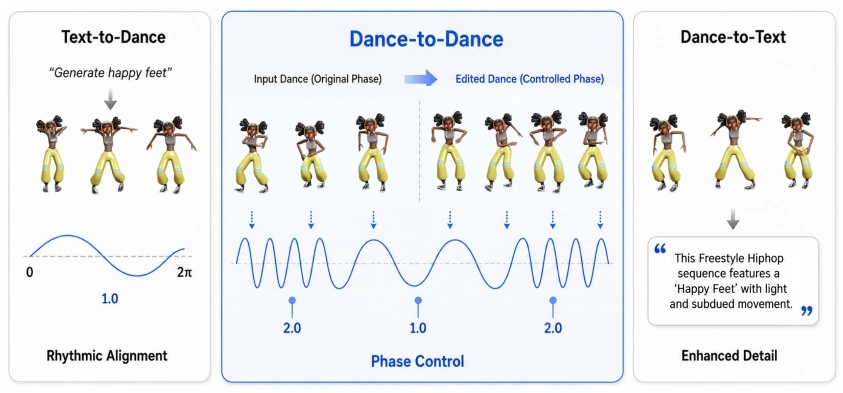
Beyond Action Description. Natural language has been a powerful cross-modal lever in vision tasks [27, 9, 39, 29], but its potential remains under-exploited for dance. Existing text–dance annotations consist of shallow categorical labels (e.g., “a person is dancing jazz”) [7, 23, 45]: genre tags carry too little information to specify fine-grained choreographic intent, leaving the dance itself effectively under-described. Large-scale general-motion corpora such as HumanML3D [11] cannot fill this gap either, because the language of choreography differs from that of everyday action—the dance move running man, for instance, denotes a hip-hop step rather than the literal act of running. Choreography therefore demands its own descriptive vocabulary.
We address this by grounding text in Laban Movement Analysis (LMA) [16], an established framework for articulating the qualitative dimensions of human movement: energy, weight, timing, and spatial intent. LMA provides the quantitative descriptors that genre tags lack, and dance is the motion domain in which these qualitative dimensions are most concentrated. Following the contemporary view of dance as a visualisation of music, we further pair each LMA descriptor with a corresponding music feature—vigour with RMS energy, groove depth with swing ratio, and so on—so that the same adjective (e.g., “high-energy”) carries identical meaning across motion and music. The resulting vocabulary captures both the qualitative texture of dance and its musical character in a single shared semantic axis. We additionally use an in-house text–dance dataset (DT corpus) of motion-capture choreography paired with dance-move annotations and LMA-derived descriptors.
Contributions. We pioneer phase-conditioned dance modeling with PhaseDance, a unified framework that captures periodicity through phase and expressivity through dance-specific text descriptions. Our contributions are as follows:
• Periodic phase representation for dance. To our knowledge, we are the first to align phase representations directly to music period, modeling dance as a quasi-musical signal on music-aligned periodic phase manifolds. This representation enables periodic alignment between motion and music and explicit user control over choreography through frequency and phase parameters — in place of the brittle beat-coincidence enforced by prior work.
• Phase-gated network architecture. We inject phase through two complementary pathways—an interpreted pathway that contextualises phase against the active modality via cross-attention, and a literal pathway that injects raw phase at three decoder depths—hard-wiring rhythmic alignment into the network rather than leaving it to be learned implicitly.
• LMA-grounded music-aligned text. We design a text vocabulary built on fifteen LMA descriptors paired with corresponding music features, allowing text to capture dance expressivity and its musical features.
• Multitask phase-conditioned generation. Through phase-conditioned multitask training, PhaseDance achieves competitive performance across Text-to-Dance, Dance-to-Text, and Dance-to-Dance tasks (Dance Prediction and In-betweening).
2 Related Work
Music-to-Dance Generation. Following AIST++ and FACT [20], music-to-dance has progressed through codebook-based autoregressive models [32], transformer-diffusion hybrids with editing capabilities [37], and coarse-to-fine diffusion for long-sequence generation [19, 18]. Recent work extends toward unified frameworks: TM2D [7] projects music–motion and text–motion data into a shared latent space; M GPT [23] integrates all three modalities into a single LLM vocabulary, decomposing music-to-dance via auxiliary music-to-text and text-to-dance tasks; UniMuMo [40] encodes motion through a frozen music codebook to enable parallel music–motion generation; Motion Anything [45] adopts attention-based mask modeling adaptive to input modality. These works have not explicitly modeled the periodic structure that relates music and motion at a sub-beat resolution.
GPT [23] integrates all three modalities into a single LLM vocabulary, decomposing music-to-dance via auxiliary music-to-text and text-to-dance tasks; UniMuMo [40] encodes motion through a frozen music codebook to enable parallel music–motion generation; Motion Anything [45] adopts attention-based mask modeling adaptive to input modality. These works have not explicitly modeled the periodic structure that relates music and motion at a sub-beat resolution.
Text-to-Dance and Dance-to-Text. Both tasks have largely been treated as auxiliaries rather than primary objectives. Text-to-dance work has relied on either general motion datasets [11] without dance specialisation [7], or genre-level descriptions such as “a person is dancing Jazz” [23, 40]. Motion Anything [45] attempts text–music–dance triples from Motion-X [22], but its text describes body-part movements rather than rhythmic or structural choreographic qualities. Recent dance-specific corpora provide richer vocabularies: DanceCrafter [42] annotates motion with a choreographic syntax of fine-grained body-part, spatial, and directional specifications, and MDD [13] pairs duet dances with descriptions of body movements and spatial relationships between dancers. These vocabularies describe the content of the movement, whereas ours describes its musical and choreographic qualities. Dance-to-text shows the same pattern: MGPT and UniMuMo treat captioning as a secondary task limited to genre-level descriptors, leaving fine-grained attributes (rhythm, intensity, spatial patterns) unaddressed.
Phase representations. The Periodic Autoencoder (PAE) of DeepPhase [34] encodes local motion rhythm as a low-dimensional 2-D phase manifold via a learned fixed-window encoder, and has since been extended in several directions: PhaseBetweener [33] and RSMT [36] apply phase manifolds to motion in-betweening; DiffusionPhase [38] diffuses phase latents under text conditioning; and TransPhase [2] replaces PAE’s fixed-window convolution with a transformer-based action-centric encoder (ACT-PAE) and operates compositional diffusion within the resulting phase latent space. While previous works treat phase as a generic property of kinetic data, learned without reference to any external rhythmic signal, we are the first to align phase directly to music by construction and to specialise the resulting representation for dance, where the periodicity between motion and music is itself a defining property of the genre. Operating deterministically on the kinetic velocity curve further removes the need for a separate phase-encoder training stage and makes the phase signal directly comparable across music-paired and music-free clips.
3 Dance Representation
We translate the two-axis claim of Section 1— periodicity and expressivity—into two concrete representations consumed by our model: (i) a deterministic phase signal that encodes when dance moves with music, and (ii) an LMA-grounded text vocabulary that encodes how the dancer expresses it, in vocabulary aligned with music features.
3.1 Music-Aligned Kinematic Phase
Given a motion sequence ![J∈RT×22×3,]() we extract a continuous phase signal
we extract a continuous phase signal ![φt=(cosSt,sinSt)∈]()
![S1]() aligned to the music’s beat structure. The pipeline has three steps:
aligned to the music’s beat structure. The pipeline has three steps:
1. Kinetic curve. A smoothed velocity curve ![vt]() is obtained by averaging inter-frame joint displacements over all 22 SMPL joints, followed by median and Gaussian filtering.
is obtained by averaging inter-frame joint displacements over all 22 SMPL joints, followed by median and Gaussian filtering.
2. Beat selection. Local minima of ![vt]() form candidate beats. We select an optimal beat chain by dynamic programming, matching the chain’s period to the paired music BPM (or an FFT-based estimate when audio is unavailable). Multipliers accommodate half-time, double-time, and off-beat phrasings.
form candidate beats. We select an optimal beat chain by dynamic programming, matching the chain’s period to the paired music BPM (or an FFT-based estimate when audio is unavailable). Multipliers accommodate half-time, double-time, and off-beat phrasings.
3. Phase synthesis. Within each beat segment ![[bk,bk+1),]() the shift angle
the shift angle ![St]() sweeps linearly
sweeps linearly ![0→2π]() and is projected onto the unit circle.
and is projected onto the unit circle.
The result is a frame-level phase signal ![φt]() aligned with the music’s period, restarting at each selected motion beat, and defined for every clip (music-paired or not), enabling uniform multi-corpus training without any encoder-training stage. Full equations and pseudocode are in Appendix A.
aligned with the music’s period, restarting at each selected motion beat, and defined for every clip (music-paired or not), enabling uniform multi-corpus training without any encoder-training stage. Full equations and pseudocode are in Appendix A.
3.2 LMA-Grounded Dance Description
To ground language in music-aligned semantics, we build our text vocabulary on Laban Movement Analysis (LMA) [1], a movement description framework organised into four categories (Body, Effort, Shape, and Space). We instantiate this taxonomy as a set of numerical movement descriptors and pair each with a corresponding musical feature, so that every tag captures a movement quality that listeners can also perceive in music: vigour co-varies with RMS energy, groove depth with swing ratio, and so on (full correspondence in Table 13, Appendix H).
Each clip’s annotation is decomposed into four orthogonal layers: genre, movement, description, and texture. The genre, movement, and description layers are read from per-corpus annotations, while the texture layer is computed deterministically by our LMA extractor, removing any dependence on hand-labelling for the music-aligned component. Each descriptor is normalised to ![[0,1]]() and discretised into 3–4 categorical tags, yielding a unified vocabulary of adjectives.
and discretised into 3–4 categorical tags, yielding a unified vocabulary of adjectives.
Because every adjective is grounded in kinetic geometry rather than corpus-specific labelling conventions, it carries musical meaning across HumanML3D, AIST++, DanceDB, and the in-house DT corpus. The same vocabulary therefore serves as the input space for Text-to-Dance and the target space for Dance-to-Text, providing a single cross-modal channel through which text can encode musical features even when audio is absent at inference.
4 PhaseDance
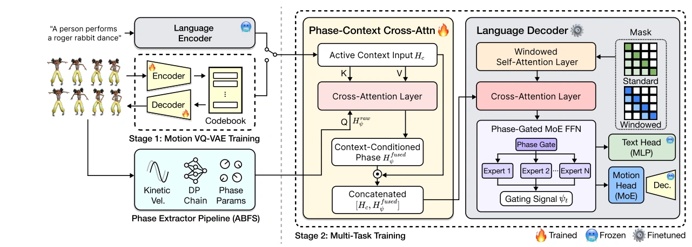
 feeds two pathways: (interpreted) PCCA queries the modality context to produce modality-grounded phase semantics; (literal) raw
feeds two pathways: (interpreted) PCCA queries the modality context to produce modality-grounded phase semantics; (literal) raw  is injected at three decoder depths—input embedding, phase-gated MoE FFN, and multi-expert output head. Four tasks share the same decoder, differing only in the active encoder branch (frozen T5 for text, motion encoder
is injected at three decoder depths—input embedding, phase-gated MoE FFN, and multi-expert output head. Four tasks share the same decoder, differing only in the active encoder branch (frozen T5 for text, motion encoder ![Em]() for motion).
for motion).4.1 Overview and Design Principles
PhaseDance is a multitask framework that addresses four dance generation and understanding tasks — Text-to-Dance (TP2M), Dance Prediction (MP2M), In-betweening (IB), and Dance-to-Text (M2T) — within a unified encoder-decoder network (Figure 2). We adopt T5-small [28] as our multi-task backbone, leveraging its text-to-text formulation to unify diverse motion-language tasks under a single autoregressive objective. To bridge the continuous motion domain and the discrete token space required by T5, we tokenize motion with a Motion VQ-VAE [43], which maps motion resampled to ![50]() Hz to discrete codebook indices without temporal downsampling. Rhythmic state is obtained from a phase extractor pipeline, providing the phase signal
Hz to discrete codebook indices without temporal downsampling. Rhythmic state is obtained from a phase extractor pipeline, providing the phase signal ![φt=(cosSt,sinSt)]() used throughout the decoder.
used throughout the decoder.
The network comprises two input branches that preserve the priors of each modality. The language branch reuses a frozen T5-small encoder together with its shared input embedding and LM head, retaining the pretrained linguistic prior for both TP2M conditioning and M2T generation. The motion branch is handled by a separately-parameterized encoder ![Em]() that operates directly on VQ-VAE motion tokens; crucially, motion is not remapped into the language space, so the motion codebook geometry is preserved.
that operates directly on VQ-VAE motion tokens; crucially, motion is not remapped into the language space, so the motion codebook geometry is preserved.
Alongside the two branches, the phase signal serves as a continuous rhythmic anchor that obviates explicit beat alignment. It enters the decoder through two complementary pathways. An interpreted pathway, implemented by Phase-Context Cross-Attention (PCCA), queries the active modality context so that phase takes on a modality-specific role. A literal pathway injects the raw phase ![(cosSt,sinSt)]() at three decoder depths to supply per-frame rhythmic state. Together, the two pathways give four phase-injection points. During training, the T5 encoder and the Motion VQ-VAE codebook remain frozen; the decoder, the motion encoder
at three decoder depths to supply per-frame rhythmic state. Together, the two pathways give four phase-injection points. During training, the T5 encoder and the Motion VQ-VAE codebook remain frozen; the decoder, the motion encoder ![Em,]() and the newly introduced phase-aware components are updated.
and the newly introduced phase-aware components are updated.
4.2 Phase Conditioning Mechanisms
4.2.1 Interpreted Phase via PCCA
The interpreted pathway addresses the question: how should phase function in the current modality? The answer differs by modality, and even within text it depends on what the prompt specifies: when the text names a concrete movement with clear rhythmic structure (e.g., “Roger Rabbit”), phase carries that rhythm directly; when the text is more abstract (e.g., “hip-hop dance”), phase instead plays a supporting role that helps realize the described expression. Under motion conditioning, phase consistently serves as a user control knob for dictating the rhythmic continuation. To handle this context-dependent behavior, we propose Phase-Context Cross-Attention (PCCA), which lets phase query the modality context so that the encoder shapes phase semantics rather than passing them fixed to the decoder. Phase  is first embedded through an MLP
is first embedded through an MLP ![φemb]() to obtain
to obtain ![Hφraw∈RT×d,]() which then attends to the active encoder context
which then attends to the active encoder context ![Hc]() :
:
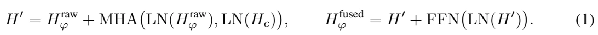
原文第 5 页 ↗The modality-interpreted phase is concatenated with ![Hc]() to form the encoder memory
to form the encoder memory ![Henc]()

![[Hc;H]()
 fused
fused![]]() that the decoder cross-attention consumes. PCCA binds phase to its modality context at the encoder, which also prevents modality conflict in the decoder; without it, the decoder would have to learn this binding implicitly from a flat concatenation of raw phase and modality features.
that the decoder cross-attention consumes. PCCA binds phase to its modality context at the encoder, which also prevents modality conflict in the decoder; without it, the decoder would have to learn this binding implicitly from a flat concatenation of raw phase and modality features.
4.2.2 Literal Phase: Three Decoder Injections
While PCCA provides modality-grounded phase semantics on the encoder side, the decoder additionally needs per-frame rhythmic state for autoregressive token prediction. We inject the raw phase at three decoder depths. Each decoder block contains ![N=4]() FFN experts and
FFN experts and ![E=8]() output-head experts.
output-head experts.
(i) Decoder input embedding. The teacher-forcing input at frame  is augmented with phase:
is augmented with phase:
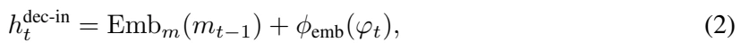
原文第 5 页 ↗where ![hd]() ec-in is decoder hidden state before the block,
ec-in is decoder hidden state before the block, ![mt−1]() is the previously generated motion token, and
is the previously generated motion token, and ![φemb(·)t]() is a learned phase embedding.
is a learned phase embedding.
(ii) Phase-gated MoE feed-forward. The dense FFN sublayer of every decoder block is replaced with a phase-gated Mixture-of-Experts:
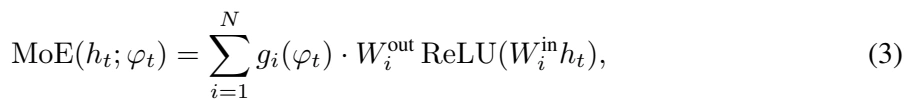
原文第 5 页 ↗with ![N=4]() experts and a softmax gate
experts and a softmax gate ![g(φ)=softmax(MLP(φ))∈∆N]() that routes each frame by its phase. All experts are initialised from the pretrained T5 FFN weights: the first exactly, and the others with the same weights perturbed by Gaussian noise (
that routes each frame by its phase. All experts are initialised from the pretrained T5 FFN weights: the first exactly, and the others with the same weights perturbed by Gaussian noise (![σ=0.01)]() .
.
(iii) Phase-gated multi-expert output head. The output projection is replaced by a phase-gated multi-expert head:
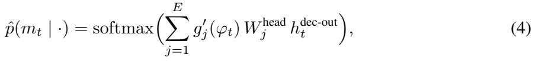
原文第 6 页 ↗with ![E=8]() expert heads.
expert heads. ![hdec-outt]() represents decoder hidden state after the block. Phase thus modulates the output token distribution directly, beyond its effect through the FFN.
represents decoder hidden state after the block. Phase thus modulates the output token distribution directly, beyond its effect through the FFN.
Coordinated effect. The three injections modulate complementary aspects of generation: the input embedding shifts the per-frame token representation, the MoE gate selects rhythm-specialised expert sub-networks, and the output head re-weights the token distribution. When phase is unavailable, as in M2T, the MoE reduces to a uniform average of the ![N]() experts, and the multi-expert motion head is bypassed in favour of T5’s pretrained LM head. This is what allows M2T to share the same decoder without architectural surgery.
experts, and the multi-expert motion head is bypassed in favour of T5’s pretrained LM head. This is what allows M2T to share the same decoder without architectural surgery.
4.2.3 Windowed Causal Self-Attention
Because phase already provides the rhythmic anchor, we restrict self-attention to a local causal window covering the current token and the ![W=4]() preceding ones; attending to the full history would let past frames, rather than the phase, dictate the timing of the generated motion:
preceding ones; attending to the full history would let past frames, rather than the phase, dictate the timing of the generated motion:
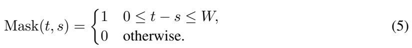
原文第 6 页 ↗The window is enabled for all motion-generation tasks (TP2M, MP2M, IB) and automatically disabled for M2T, where long-range textual coherence is necessary.
4.3 Multi-Task Unification
PhaseDance handles four tasks under a unified network by routing inputs through its two encoder branches and a shared phase-conditioned decoder. Table 1 summarises the routing. Per-task protocol details, and decoding hyper-parameters (top-![k,]() top-
top-![p,]() beam) are provided in Appendix D.
beam) are provided in Appendix D.
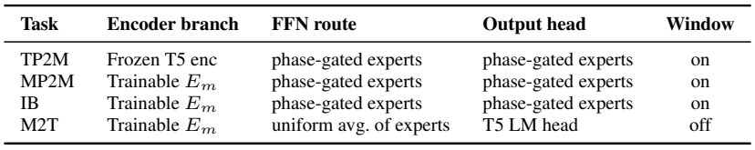
PhaseDance is trained end-to-end on a weighted sum of the four task losses (token-level cross-entropy on predicted motion tokens for the three motion-generation tasks; the standard T5 conditional language-modelling loss for M2T):
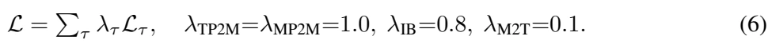
原文第 6 页 ↗5 Experiments
5.1 Experimental setup
5.1.1 Training and Evaluation Dataset
We train on the union of HumanML3D [11] (free-form action clips), AIST++ [20] (1,408 choreographies in 10 genres, paired music), DanceDB [35], and the in-house DT corpus, evaluating each task on AIST++. AIST++ evaluation follows the 5-second-slice convention of EDGE [37]. DT is a freestyle hip-hop dance dataset comprising 926 motion clips (1,852 with mirrored augmentation) paired with 3 music tracks. The dataset covers 31 distinct hip-hop street dance movements. We use 1,502 / 109 / 100 clips (including mirrored copies) for training / validation / test. Motion is tokenised by a 1-codebook, 1024-entry VQ-VAE pre-trained from scratch on the union; the phase signal is produced by the pipeline in Section 3.1. DT corpus details are in Appendix E.
Inference-time phase modes for dance generation. For dance generation, we evaluate two inference-time phase modes that differ only in how ![φt]() is supplied at test time. synthesis_phase is the deployment setting:
is supplied at test time. synthesis_phase is the deployment setting: ![φt]() is synthesised around a nominal tempo, so it is available for any input, including when no paired music exists. gt_phase is an oracle setting:
is synthesised around a nominal tempo, so it is available for any input, including when no paired music exists. gt_phase is an oracle setting: ![φt]() is the phase extracted from the ground-truth test motion, which is unavailable at generation time. Because the extraction aligns the beat chain to the paired music (Section 3.1), gt_phase is the setting in which the phase carries the music’s period; it is used to upper-bound the contribution of phase. Both modes share a single trained checkpoint.
is the phase extracted from the ground-truth test motion, which is unavailable at generation time. Because the extraction aligns the beat chain to the paired music (Section 3.1), gt_phase is the setting in which the phase carries the music’s period; it is used to upper-bound the contribution of phase. Both modes share a single trained checkpoint.
5.1.2 Evaluation Metrics
We assess our model with three groups of metrics. For motion realism we use FID ( and Diversity (DIV,
and Diversity (DIV,  since both mode collapse and unconditioned drift are pathological), computed on kinetic (FID
since both mode collapse and unconditioned drift are pathological), computed on kinetic (FID Div
Div![k)]() and geometric (FID
and geometric (FID Div
Div![g)]() features following AIST++ [20], and ADE / FDE (
features following AIST++ [20], and ADE / FDE ( MP and IB only). For text alignment on Dance-to-Text we use the M2T evaluator [12] (inheriting HumanML3D’s t2m contrastive encoder) and report R-Precision @1 / 2 / 3 (
MP and IB only). For text alignment on Dance-to-Text we use the M2T evaluator [12] (inheriting HumanML3D’s t2m contrastive encoder) and report R-Precision @1 / 2 / 3 (![↑),]() Bleu-1 / 4 (
Bleu-1 / 4 (![↑),]() Rouge-L (
Rouge-L (![↑),]() CIDEr (
CIDEr (![↑),]() and BertScore (
and BertScore ( . For rhythmic alignment we use the Beat Alignment Score (BAS,
. For rhythmic alignment we use the Beat Alignment Score (BAS, ![→)[]() 32], computed throughout with BeatNet [14] as the music-beat source and local minima of smoothed kinetic velocity as the motion-beat source; the choice of BeatNet over librosa-style heuristics is motivated in Appendix F. Most musical dance aligns with the periodicity of the music and with genre-specific rhythmic patterns, rather than with individual beats. Mean BAS, which rewards beat-level coincidence, captures neither. A perceptual study (Appendix G) confirms that viewers judge rhythm along these two axes. When the motion’s period matches the music, viewers see no difference from the original even after BAS collapses from
32], computed throughout with BeatNet [14] as the music-beat source and local minima of smoothed kinetic velocity as the motion-beat source; the choice of BeatNet over librosa-style heuristics is motivated in Appendix F. Most musical dance aligns with the periodicity of the music and with genre-specific rhythmic patterns, rather than with individual beats. Mean BAS, which rewards beat-level coincidence, captures neither. A perceptual study (Appendix G) confirms that viewers judge rhythm along these two axes. When the motion’s period matches the music, viewers see no difference from the original even after BAS collapses from ![0.59]() to
to ![0.19]() . When periodicity and beat alignment disagree, viewers side with periodicity (
. When periodicity and beat alignment disagree, viewers side with periodicity ( to
to ![3)]() ; across these comparisons, BPS predicts the viewers’ choice in all three cases and BAS in none. Viewers’ ratings of how precisely each genre lands on the beat also track the ground-truth per-genre BAS profile (Pearson
; across these comparisons, BPS predicts the viewers’ choice in all three cases and BAS in none. Viewers’ ratings of how precisely each genre lands on the beat also track the ground-truth per-genre BAS profile (Pearson ![r=0.81)]() . We therefore propose the Beat Periodicity Score (BPS) and the BAS–Genre Correlation Score to capture rhythmic alignment beyond beat matching.
. We therefore propose the Beat Periodicity Score (BPS) and the BAS–Genre Correlation Score to capture rhythmic alignment beyond beat matching.
Beat Periodicity Score (BPS). BAS measures beat alignment—whether motion beats fall close to individual music beats. Musical dance, however, also requires period matching: motion should pulse at the same tempo as the music, even when individual beats drift in and out of alignment. We therefore introduce BPS, a complementary metric that scores tempo agreement between motion and music. Given motion beats ![{mi}(]() local minima of smoothed kinetic velocity) and music beats
local minima of smoothed kinetic velocity) and music beats ![{bj}]() (BeatNet output), we estimate periods as
(BeatNet output), we estimate periods as ![Tmotion=median(∆m)/]() fps and
fps and ![Tmusic=median(∆b)/]() fps, converted to BPM. To accommodate stylistic doubling (e.g., a dancer halving the music’s tempo), we admit harmonic ratios
fps, converted to BPM. To accommodate stylistic doubling (e.g., a dancer halving the music’s tempo), we admit harmonic ratios ![h∈{1,2,1,4,1,3,1}2 4 3]() and compute the best-matched relative error
and compute the best-matched relative error
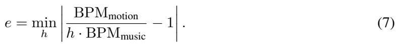
原文第 7 页 ↗The score follows a Gaussian on  :
: ![BPS=exp]()
![−e2 2σ2]()

![σ=0.2,]() yielding a value in
yielding a value in ![[0,1]]() .
.
Beat Alignment Score (BAS) Genre Correlation Score. We compute BAS per genre across the 10 AIST++ genres, yielding a 10-dimensional per-genre BAS vector for each model. We then report three statistics that measure the agreement between each model’s vector and the ground-truth vector: the Pearson coefficient (![r,↑),]() the Spearman coefficient (
the Spearman coefficient (![ρ,↑),]() and the mean absolute error (MAE,
and the mean absolute error (MAE,  . A model with uniformly high but flat per-genre BAS attains weak or even negative correlation, exposing the genre-blindness that mean BAS hides.
. A model with uniformly high but flat per-genre BAS attains weak or even negative correlation, exposing the genre-blindness that mean BAS hides.
5.2 Dance Generation Evaluation: Beyond Beat Matching
5.2.1 Text-to-Dance Task
Text-to-Dance exceeds Music-to-Dance in rhythmic alignment. While its motion quality is competitive rather than best-in-table, our Text-to-Dance model attains the strongest BAS–Genre Correlation in the table, ahead of every music-conditioned baseline. Text and phase share this role: the text carries part of the genre-specific rhythm through the genre and LMA-grounded vocabulary, and the phase pathway realises it in motion. The period, in contrast, relies more on the phase. Under the deployment setting, BPS (![0.67)]() is already on par with the music-conditioned baselines (
is already on par with the music-conditioned baselines (![0.63]() –
–![0.70),]() and when the phase carries the music’s period, under the oracle setting (gt_phase), it rises to the highest value in the table (
and when the phase carries the music’s period, under the oracle setting (gt_phase), it rises to the highest value in the table (![0.73),]() showing that the generated motion follows the period supplied through phase. Despite consuming no audio input, our text-conditioned model thus reproduces the genre-specific rhythmic profile more faithfully than the music-conditioned baselines and the music’s period comparably to them.
showing that the generated motion follows the period supplied through phase. Despite consuming no audio input, our text-conditioned model thus reproduces the genre-specific rhythmic profile more faithfully than the music-conditioned baselines and the music’s period comparably to them.
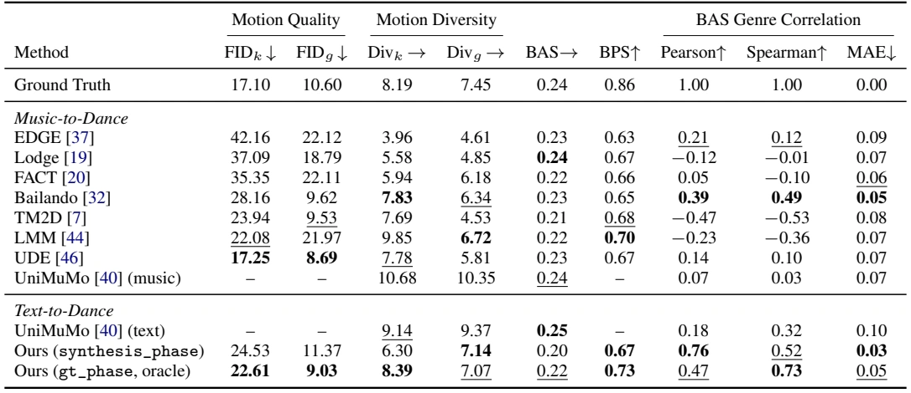
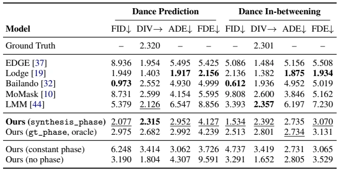
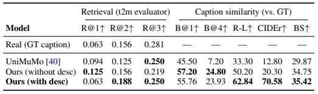
5.2.2 Dance Prediction and Dance In-betweening Tasks
When the context is motion itself—a prefix (MP2M) or prefix-suffix pair (IB)—phase plays a role: explicit user control over the rhythmic character of the continuation. Unlike linguistic context, which can encode rhythm through LMA-grounded descriptors and movement, a motion prefix carries the rhythm of what has been performed so far but leaves open how the continuation should proceed. Phase is the channel through which the user dictates the rhythm of the continuation.
Phase as control knob. In Table 3, our model under synthesis_phase achieves competitive performance on both tasks, with diversity closest to the ground truth on MP; Lodge attains lower trajectory error but at a much lower diversity (MP DIV ![1.40]() vs. GT
vs. GT ![2.32)]() . The generated motion is steered by the phase it is given. Without phase, the motion collapses: MP ADE rises from
. The generated motion is steered by the phase it is given. Without phase, the motion collapses: MP ADE rises from ![2.95]() to
to ![4.31,]() FDE from
FDE from ![4.13]() to
to ![9.59,]() and diversity drops to
and diversity drops to ![1.80]() . Supplying the same phase value at every frame breaks the dance as well, raising FID from
. Supplying the same phase value at every frame breaks the dance as well, raising FID from ![2.08]() to
to ![6.25]() on MP and from
on MP and from ![1.53]() to
to ![4.74]() on IB. The model therefore relies on a varying phase rather than ignoring it, which allows phase to serve as an explicit knob for the rhythmic character. We illustrate this in Figure 4, where varying
on IB. The model therefore relies on a varying phase rather than ignoring it, which allows phase to serve as an explicit knob for the rhythmic character. We illustrate this in Figure 4, where varying  from a fixed prefix produces visibly different rhythmic continuations; full qualitative evaluation, including phase-control results and SOTA comparisons, is provided in Appendix J.
from a fixed prefix produces visibly different rhythmic continuations; full qualitative evaluation, including phase-control results and SOTA comparisons, is provided in Appendix J.
5.3 Dance Captioning Evaluation: Beyond Action Description
We compare with UniMuMo [40], the only released motion-to-text model on dance choreography. To probe the contribution of the layered captions (Section 3.2), we additionally include two variants of our model that differ in their training captions: Ours (without desc) is trained on each corpus’s original caption sentences, one at a time, so that each caption conveys a single piece of information (a genre, a movement name, or a short motion description); Ours (with desc) is trained on captions that compose the genre, movement, description, and texture layers into a single sentence (Appendix H.2). Results are in Table 4.
The two metric groups in Table 4 should be read differently. R-Precision asks the M2T evaluator to retrieve the matching caption for each motion from a pool of ![32]() captions (
captions ( match and
match and ![31]() distractors). Because the evaluator’s text encoder was trained on HumanML3D’s action-level captions, it separates dance vocabulary poorly: even the ground-truth captions (“Real”) reach only R@1
distractors). Because the evaluator’s text encoder was trained on HumanML3D’s action-level captions, it separates dance vocabulary poorly: even the ground-truth captions (“Real”) reach only R@1 ![=0.063,]() twice the random baseline of
twice the random baseline of ![1/32]() . R-Precision therefore has a low ceiling for dance captions, and its differences between models are small. BLEU, ROUGE-L, CIDEr, and BertScore, by contrast, compare each generated caption against the ground-truth captions and serve as our main basis for comparing models. Since they are trivially perfect on the “Real” row, we leave that row blank.
. R-Precision therefore has a low ceiling for dance captions, and its differences between models are small. BLEU, ROUGE-L, CIDEr, and BertScore, by contrast, compare each generated caption against the ground-truth captions and serve as our main basis for comparing models. Since they are trivially perfect on the “Real” row, we leave that row blank.
LMA-grounded layers enrich captions. The with-desc variant clearly outperforms the without-desc variant on ROUGE-L (![62.84]() vs.
vs. ![50.20)]() and CIDEr (
and CIDEr (![70.58]() vs.
vs. ![20.30),]() with BLEU and BertScore on par. Because the training captions bind the genre, the movement name, a motion description, and LMA-grounded texture vocabulary together, the model learns to describe a clip along these axes at once rather than one at a time, which raises the overlap with the reference content. Both variants also outperform UniMuMo on every caption-similarity metric (e.g., BLEU-4
with BLEU and BertScore on par. Because the training captions bind the genre, the movement name, a motion description, and LMA-grounded texture vocabulary together, the model learns to describe a clip along these axes at once rather than one at a time, which raises the overlap with the reference content. Both variants also outperform UniMuMo on every caption-similarity metric (e.g., BLEU-4 ![24.80]() and
and ![23.93]() vs.
vs. ![7.20),]() despite UniMuMo’s larger language backbone (T5-base [28]). R-Precision stays within the evaluator’s low ceiling for all models. This empirically supports the design claim of Section 3.2: the layered captions, including the LMA-grounded vocabulary, appear on both the Text-to-Dance and Dance-to-Text sides and enhance the expressivity of both tasks.
despite UniMuMo’s larger language backbone (T5-base [28]). R-Precision stays within the evaluator’s low ceiling for all models. This empirically supports the design claim of Section 3.2: the layered captions, including the LMA-grounded vocabulary, appear on both the Text-to-Dance and Dance-to-Text sides and enhance the expressivity of both tasks.
5.4 Ablation Study
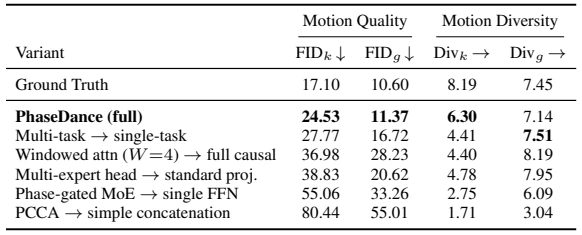
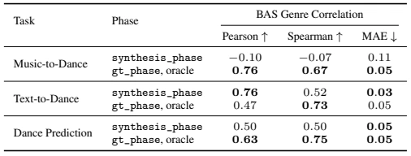
Table 5 isolates each architectural component on Text-to-Dance: every variant replaces one component with a simpler alternative and is retrained from scratch. We additionally train the full model on Text-to-Dance alone to assess the effect of multi-task training. The music-conditioned rows of Table 6 come from an optional Music+Phase-to-Motion (MuP2M) finetune of the model (Appendix D.1).
Every component contributes, PCCA most. Replacing PCCA with simple concatenation raises FIDk to 80.44, the largest degradation among the variants, and collapses diversity (Divk 1.71). Replacing the phase-gated MoE with a single dense FFN, which removes phase-conditioned routing along with the expert capacity, raises FIDk to 55.06; the gate partitions the beat cycle into contiguous arcs across experts (Appendix D.3). Full causal attention keeps the parameter count unchanged and widens the context, yet FIDk rises to 36.98. Replacing the phase-conditioned output head with a standard projection raises FIDk to 38.83. Restricting attention to the local neighbourhood and routing by phase both matter, beyond the amount of capacity available. Training on Text-to-Dance alone instead of all four tasks also raises FIDk to 27.77 and FIDg to 16.72 and lowers Divk to 4.41, indicating that multi-task training benefits generation.
What PCCA actually learns: context-dependent phase semantics. The per-modality results in Table 6 reveal that PCCA reinterprets phase along a spectrum of dependence that varies with the conditioning modality. Under music conditioning, phase is fully load-bearing: the model collapses without the ground-truth phase (![r=−0.10]() with synthesis_phase) and recovers only when the test-time phase exactly matches the music (
with synthesis_phase) and recovers only when the test-time phase exactly matches the music (![r=0.76]() with gt_phase). This suggests that, when music and phase are trained jointly, phase largely takes over the role of the music’s rhythm, as the model reaches its performance only when the correct phase is given. Under motion conditioning, the prefix already internalises rhythm (
with gt_phase). This suggests that, when music and phase are trained jointly, phase largely takes over the role of the music’s rhythm, as the model reaches its performance only when the correct phase is given. Under motion conditioning, the prefix already internalises rhythm (![r=0.50]() with synthesis_phase,
with synthesis_phase, ![r=0.63]() with gt_phase), showing that motion carries its own rhythmic prior, while the model still treats phase as a requirement for the continuation (Table 3). Under text conditioning, the prompt itself carries rhythmic information to varying degrees (e.g., through the genre, movement names, and LMA-grounded descriptors), and phase complements it: both synthesis_phase and gt_phase reproduce the genre-wise rhythmic alignment of the ground truth (Pearson
with gt_phase), showing that motion carries its own rhythmic prior, while the model still treats phase as a requirement for the continuation (Table 3). Under text conditioning, the prompt itself carries rhythmic information to varying degrees (e.g., through the genre, movement names, and LMA-grounded descriptors), and phase complements it: both synthesis_phase and gt_phase reproduce the genre-wise rhythmic alignment of the ground truth (Pearson ![r=0.76]() and
and ![0.47,]() Spearman
Spearman ![ρ=0.52]() and
and ![0.73)]() . The same architecture thus positions phase along a load-bearing-to-auxiliary spectrum that tracks how much rhythmic information each modality already carries on its own.
. The same architecture thus positions phase along a load-bearing-to-auxiliary spectrum that tracks how much rhythmic information each modality already carries on its own.
6 Conclusion
Modern choreography frames dance as a visualisation of music, in which the dancer’s role is to express the musical rhythm — not merely to step on the beat. We have presented PhaseDance, the first phase-aware, text-augmented multi-task model that operationalises this view for dance modeling. The combination of (i) deterministic, music-aligned phase extraction, (ii) Laban-grounded texture tags paired with music features and shared across corpora, and (iii) a phase-conditioned unified architecture allows a single model to handle all four tasks (Text-to-Dance, Dance-to-Text, Dance Prediction, and Dance In-betweening). PhaseDance provides a reference architecture that treats rhythm and an LMA-grounded vocabulary of dance expressivity as structural inductive biases in motion–language models. It also offers a way to evaluate dance generators that captures both the rhythmic identity of dance and its alignment with music, in agreement with human perception.
Limitations and future work. Although PhaseDance is trained on multiple corpora, the in-house DT motion-capture data cannot be publicly redistributed for institutional-ownership reasons (Appendix E), and our BAS-based metrics inherit residual error from the BeatNet beat tracker (Appendix F). Both phase extraction and generation are robust to typical errors, such as small tempo misestimates or local timing deviations (e.g., rubato), but errors well beyond this range can propagate to the generated motion (Appendices B and C). Future work will extend the framework along two axes: (i) unifying music conditioning into the multi-task pipeline as more paired music–motion data becomes available, building on the optional MuP2M finetune of Appendix D.1; and (ii) promoting the amplitude channel ![At]() to an additional control knob alongside phase. Since the choreographically central rhythmic information lives in frequency and phase, this work concentrates the model on
to an additional control knob alongside phase. Since the choreographically central rhythmic information lives in frequency and phase, this work concentrates the model on ![Ft]() and
and ![St]() and leaves
and leaves ![At]() extracted but unused, although it naturally captures the dynamic intensity of the motion.
extracted but unused, although it naturally captures the dynamic intensity of the motion.
Acknowledgments and Disclosure of Funding
This work was supported by Institute of Information & Communications Technology Planning & Evaluation (IITP) grants funded by the Korea government (MSIT) (No. RS-2026-25507551, No. RS- 2025-25441313, No. RS-2022-00156435). This research was also supported by the Ministry of Science and ICT (MSIT) through the 2026 High-Performance Computing (HPC) Support Program. The authors declare no competing interests.
References
[1] Andreas Aristidou, Efstathios Stavrakis, Margarita Papaefthimiou, George Papagiannakis, and Yiorgos Chrysanthou. Style-based motion analysis for dance composition. The visual computer, 34(12):1725–1737, 2018.
[2] Ho Yin Au, Jie Chen, Junkun Jiang, and Jingyu Xiang. Deep compositional phase diffusion for long motion sequence generation. arXiv preprint arXiv:2510.14427, 2025.
[3] Birgitta Burger, Marc R Thompson, Geoff Luck, Suvi Saarikallio, and Petri Toiviainen. Influences of rhythm-and timbre-related musical features on characteristics of music-induced movement. Frontiers in psychology, 4:183, 2013.
[4] Antonio Camurri, Ingrid Lagerlöf, and Gualtiero Volpe. Recognizing emotion from dance movement: comparison of spectator recognition and automated techniques. International journal of human-computer studies, 59(1-2):213–225, 2003.
[5] Zohar Eitan and Renee Timmers. Beethoven’s last piano sonata and those who follow crocodiles: Cross-domain mappings of auditory pitch in a musical context. Cognition, 114(3):405–422, 2010.
[6] Daniel P. W. Ellis. Beat tracking by dynamic programming. Journal of New Music Research, 36(1):51–60, 2007.
[7] Kehong Gong, Dongze Lian, Heng Chang, Chuan Guo, Zihang Jiang, Xinxin Zuo, Michael Bi Mi, and Xinchao Wang. Tm2d: Bimodality driven 3d dance generation via music-text integration. In Proceedings of the IEEE/CVF International Conference on Computer Vision, pages 9942–9952, 2023.
[8] Fabien Gouyon, Anssi Klapuri, Simon Dixon, Miguel Alonso, George Tzanetakis, Christian Uhle, and Pedro Cano. An experimental comparison of audio tempo induction algorithms. IEEE Transactions on Audio, Speech, and Language Processing, 14(5):1832–1844, 2006.
[9] Xiuye Gu, Tsung-Yi Lin, Weicheng Kuo, and Yin Cui. Open-vocabulary object detection via vision and language knowledge distillation. arXiv preprint arXiv:2104.13921, 2021.
[10] Chuan Guo, Yuxuan Mu, Muhammad Gohar Javed, Sen Wang, and Li Cheng. Momask: Generative masked modeling of 3d human motions. In 2024 IEEE/CVF Conference on Computer Vision and Pattern Recognition (CVPR), pages 1900–1910. IEEE, 2024.
[11] Chuan Guo, Shihao Zou, Xinxin Zuo, Sen Wang, Wei Ji, Xingyu Li, and Li Cheng. Generating diverse and natural 3d human motions from text. In Proceedings of the IEEE/CVF conference on computer vision and pattern recognition, pages 5152–5161, 2022.
[12] Chuan Guo, Xinxin Zuo, Sen Wang, and Li Cheng. Tm2t: Stochastic and tokenized modeling for the reciprocal generation of 3d human motions and texts. In European Conference on Computer Vision, pages 580–597. Springer, 2022.
[13] Prerit Gupta, Jason Alexander Fotso-Puepi, Zhengyuan Li, Jay Mehta, and Aniket Bera. Mdd: a dataset for text-and-music conditioned duet dance generation. In 2025 IEEE/CVF International Conference on Computer Vision (ICCV), pages 13932–13941. IEEE, 2025.
[14] Mojtaba Heydari, Frank Cwitkowitz, and Zhiyao Duan. Beatnet: Crnn and particle filtering for online joint beat downbeat and meter tracking. arXiv preprint arXiv:2108.03576, 2021.
[15] Stephanie Jordan. Moving Music: Dialogues with Music in Twentieth-Century Ballet. Dance Books, London, 2000.
[16] Roderyk Lange. Laban and movement notation. In The Laban Sourcebook, pages 155–166. Routledge, 2012.
[17] Fred Lerdahl and Ray S Jackendoff. A Generative Theory of Tonal Music, reissue, with a new preface. MIT press, 1996.
[18] Ronghui Li, Hongwen Zhang, Yachao Zhang, Yuxiang Zhang, Youliang Zhang, Jie Guo, Yan Zhang, Xiu Li, and Yebin Liu. Lodge++: High-quality and long dance generation with vivid choreography patterns. arXiv preprint arXiv:2410.20389, 2024.
[19] Ronghui Li, YuXiang Zhang, Yachao Zhang, Hongwen Zhang, Jie Guo, Yan Zhang, Yebin Liu, and Xiu Li. Lodge: A coarse to fine diffusion network for long dance generation guided by the characteristic dance primitives. In Proceedings of the IEEE/CVF Conference on Computer Vision and Pattern Recognition, pages 1524–1534, 2024.
[20] Ruilong Li, Shan Yang, David A Ross, and Angjoo Kanazawa. Ai choreographer: Music conditioned 3d dance generation with aist++. In Proceedings of the IEEE/CVF international conference on computer vision, pages 13401–13412, 2021.
[21] Yizhi Li, Ruibin Yuan, Ge Zhang, Yinghao Ma, Xingran Chen, Hanzhi Yin, Chenghao Xiao, Chenghua Lin, Anton Ragni, Emmanouil Benetos, et al. Mert: Acoustic music understanding model with large-scale self-supervised training. arXiv preprint arXiv:2306.00107, 2023.
[22] Jing Lin, Ailing Zeng, Shunlin Lu, Yuanhao Cai, Ruimao Zhang, Haoqian Wang, and Lei Zhang. Motion-X: A large-scale 3D expressive whole-body human motion dataset. Advances in Neural Information Processing Systems, 36:25268–25280, 2023.
[23] Mingshuang Luo, Ruibing Hou, Zhuo Li, Hong Chang, Zimo Liu, Yaowei Wang, and Shiguang Shan. M GPT: An advanced multimodal, multitask framework for motion comprehension and generation. Advances in Neural Information Processing Systems, 37:28051–28077, 2024.
GPT: An advanced multimodal, multitask framework for motion comprehension and generation. Advances in Neural Information Processing Systems, 37:28051–28077, 2024.
[24] Sebastian Merchel and M Ercan Altinsoy. Auditory-tactile music perception. In Proceedings of Meetings on Acoustics, volume 19, page 015030. Acoustical Society of America, 2013.
[25] Dirk Moelants. Preferred tempo reconsidered. In Proceedings of the 7th International Conference on Music Perception and Cognition/C. Stevens, D. Burnham, G. McPherson, E. Schubert, J. Renwick (eds.).-Sydney, Adelaide, Causal Productions, 2002, pages 580–583, 2002.
[26] Tajana Opacic, Catherine Stevens, and Barbara Tillmann. Unspoken knowledge: implicit learning of structured human dance movement. Journal of Experimental Psychology: Learning, Memory, and Cognition, 35(6):1570, 2009.
[27] Alec Radford, Jong Wook Kim, Chris Hallacy, Aditya Ramesh, Gabriel Goh, Sandhini Agarwal, Girish Sastry, Amanda Askell, Pamela Mishkin, Jack Clark, et al. Learning transferable visual models from natural language supervision. In International conference on machine learning, pages 8748–8763. PmLR, 2021.
[28] Colin Raffel, Noam Shazeer, Adam Roberts, Katherine Lee, Sharan Narang, Michael Matena, Yanqi Zhou, Wei Li, and Peter J Liu. Exploring the limits of transfer learning with a unified text-to-text transformer. Journal of machine learning research, 21(140):1–67, 2020.
[29] Robin Rombach, Andreas Blattmann, Dominik Lorenz, Patrick Esser, and Björn Ommer. High-resolution image synthesis with latent diffusion models. In Proceedings of the IEEE/CVF conference on computer vision and pattern recognition, pages 10684–10695, 2022.
[30] Emery Schubert. Modeling perceived emotion with continuous musical features. Music perception, 21(4):561–585, 2004.
[31] William A Sethares. Rhythm and transforms, perception and mathematics. In International Conference on Mathematics and Computation in Music, pages 1–10. Springer, 2007.
[32] Li Siyao, Weijiang Yu, Tianpei Gu, Chunze Lin, Quan Wang, Chen Qian, Chen Change Loy, and Ziwei Liu. Bailando: 3d dance generation by actor-critic gpt with choreographic memory. In Proceedings of the IEEE/CVF Conference on Computer Vision and Pattern Recognition, pages 11050–11059, 2022.
[33] Paul Starke, Sebastian Starke, Taku Komura, and Frank Steinicke. Motion in-betweening with phase manifolds. Proceedings of the ACM on Computer Graphics and Interactive Techniques, 6(3):1–17, 2023.
[34] Sebastian Starke, Ian Mason, and Taku Komura. Deepphase: Periodic autoencoders for learning motion phase manifolds. ACM Transactions on Graphics (ToG), 41(4):1–13, 2022.
[35] Efstathios Stavrakis, Andreas Aristidou, Maria Savva, Stephania Loizidou Himona, and Yiorgos Chrysanthou. Digitization of cypriot folk dances. In Proceedings of the 4th International Conference on Progress in Cultural Heritage Preservation, EuroMed’12, pages 404–413, Berlin, Heidelberg, 2012. Springer-Verlag.
[36] Xiangjun Tang, Linjun Wu, He Wang, Bo Hu, Xu Gong, Yuchen Liao, Songnan Li, Qilong Kou, and Xiaogang Jin. Rsmt: Real-time stylized motion transition for characters. In ACM SIGGRAPH 2023 Conference Proceedings, pages 1–10, 2023.
[37] Jonathan Tseng, Rodrigo Castellon, and Karen Liu. Edge: Editable dance generation from music. In Proceedings of the IEEE/CVF conference on computer vision and pattern recognition, pages 448–458, 2023.
[38] Weilin Wan, Yiming Huang, Shutong Wu, Taku Komura, Wenping Wang, Dinesh Jayaraman, and Lingjie Liu. Diffusionphase: Motion diffusion in frequency domain. arXiv preprint arXiv:2312.04036, 2023.
[39] Jiarui Xu, Shalini De Mello, Sifei Liu, Wonmin Byeon, Thomas Breuel, Jan Kautz, and Xiaolong Wang. Groupvit: Semantic segmentation emerges from text supervision. In Proceedings of the IEEE/CVF conference on computer vision and pattern recognition, pages 18134–18144, 2022.
[40] Han Yang, Kun Su, Yutong Zhang, Jiaben Chen, Kaizhi Qian, Gaowen Liu, and Chuang Gan. Unimumo: Unified text, music, and motion generation. In Proceedings of the AAAI Conference on Artificial Intelligence, volume 39, pages 25615–25623, 2025.
[41] Fuming You, Minghui Fang, Li Tang, Rongjie Huang, Yongqi Wang, and Zhou Zhao. Momu-diffusion: On learning long-term motion-music synchronization and correspondence. Advances in Neural Information Processing Systems, 37:127878–127906, 2024.
[42] Hang Yuan, Xiaolin Hu, Yan Wan, Menglin Gao, Wenzhe Yu, Cong Huang, Fei Xu, Qing Li, Christina Dan Wang, Zhou Yu, et al. Dancecrafter: Fine-grained text-driven controllable dance generation via choreographic syntax. arXiv preprint arXiv:2604.18648, 2026.
[43] Jianrong Zhang, Yangsong Zhang, Xiaodong Cun, Yong Zhang, Hongwei Zhao, Hongtao Lu, Xi Shen, and Ying Shan. Generating human motion from textual descriptions with discrete representations. In Proceedings of the IEEE/CVF conference on computer vision and pattern recognition, pages 14730–14740, 2023.
[44] Mingyuan Zhang, Daisheng Jin, Chenyang Gu, Fangzhou Hong, Zhongang Cai, Jingfang Huang, Chongzhi Zhang, Xinying Guo, Lei Yang, Ying He, and Ziwei Liu. Large motion model for unified multi-modal motion generation. arXiv preprint arXiv:2404.01284, 2024.
[45] Zeyu Zhang, Yiran Wang, Wei Mao, Danning Li, Rui Zhao, Biao Wu, Zirui Song, Bohan Zhuang, Ian Reid, and Richard Hartley. Motion anything: Any to motion generation. arXiv preprint arXiv:2503.06955, 2025.
[46] Zixiang Zhou and Baoyuan Wang. Ude: A unified driving engine for human motion generation. In Proceedings of the IEEE/CVF Conference on Computer Vision and Pattern Recognition, pages 16709– 16719, 2023.
Appendix
A Phase Extraction Details
Algorithm 1 gives the full ABFS pipeline producing the deterministic 5-channel signal ![Ψt=(At,Bt,Ft,St,Ot)]() of amplitude, bias, frequency, and phase shift (ABFS), plus an activity mask. From a motion clip resampled to
of amplitude, bias, frequency, and phase shift (ABFS), plus an activity mask. From a motion clip resampled to ![60]() Hz, we recover
Hz, we recover  joint positions via the RIC inverse and form a smoothed mean inter-frame joint-displacement curve
joint positions via the RIC inverse and form a smoothed mean inter-frame joint-displacement curve ![vt(]() median-3 followed by Gaussian
median-3 followed by Gaussian ![σ=1)]() . Local minima of
. Local minima of ![vt]() are taken as candidate motion beats; of any two minima closer than
are taken as candidate motion beats; of any two minima closer than ![f/6]() frames, only the deeper one is kept. A uniform-chain DP then selects the longest beat subsequence whose consecutive gaps lie in
frames, only the deeper one is kept. A uniform-chain DP then selects the longest beat subsequence whose consecutive gaps lie in ,]() breaking ties by the squared deviation from
breaking ties by the squared deviation from ![mτ]() . The target period
. The target period  is the median inter-beat interval of the paired music (BeatNet beats); for unpaired clips it is the dominant FFT peak of
is the median inter-beat interval of the paired music (BeatNet beats); for unpaired clips it is the dominant FFT peak of ![vt,]() folded into
folded into ![40]() –
–![240]() BPM by integer ratios. Multipliers are tried in this order to absorb half- or double-time mismatches. Within each chain segment,
BPM by integer ratios. Multipliers are tried in this order to absorb half- or double-time mismatches. Within each chain segment, ![St]() sweeps
sweeps ![0→2π]() linearly, and
linearly, and ![At]() and
and ![Bt]() are the within-segment
are the within-segment ![(max−min)/2]() and mean of
and mean of ![vt]() ;
; ![Ft]() is fixed at
is fixed at ![F ̄=f/∆β]() over the whole clip. Outside
over the whole clip. Outside ![[β1,βK],St]() is extrapolated linearly with slope
is extrapolated linearly with slope  . A binary stillness mask
. A binary stillness mask ![Ot]() zeroes frames in low-velocity runs (
zeroes frames in low-velocity runs (![vt<5×10−4]() for
for ![≥0.5]() s). Finally,
s). Finally,  is linearly resampled from
is linearly resampled from ![60]() to
to ![50]() Hz to match the motion-token rate. Extraction fails, and the clip is discarded, when no multiplier yields a valid chain, or, for unpaired clips, when the FFT peak is weak (peak-to-mean power ratio below
Hz to match the motion-token rate. Extraction fails, and the clip is discarded, when no multiplier yields a valid chain, or, for unpaired clips, when the FFT peak is weak (peak-to-mean power ratio below ![3)]() or the clip is shorter than
or the clip is shorter than  s. The result is a periodic phase signal aligned with the music, extracted deterministically without any learned component or encoder-training stage.
s. The result is a periodic phase signal aligned with the music, extracted deterministically without any learned component or encoder-training stage.
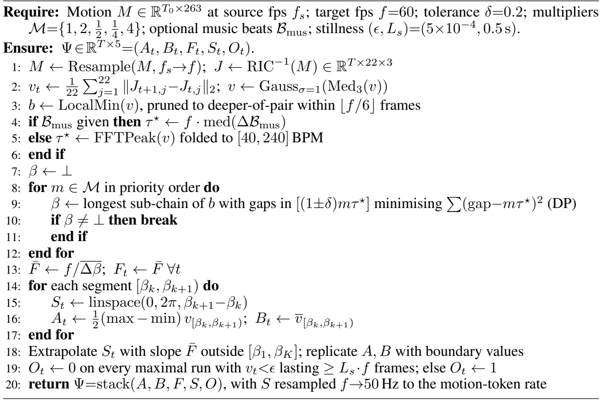
B Robustness of Beat-Chain Phase Extraction
The phase pipeline of Section 3.1 has three stages. Two rely on established methods: motion-beat candidates use the standard definition (local minima of smoothed kinetic velocity), and music beats are not estimated by us but delegated to BeatNet [14]. Beat-chain selection is ours, so we instrument Algorithm 1 and run it over every corpus in Table 7.
Extraction across corpora. Table 7 reports, for each corpus, the share of clips for which a beat chain forms and the share that resolves at multiplier ![m=1,]() the ratio of motion period to music beat period at which the dancer strikes once per music beat. Since
the ratio of motion period to music beat period at which the dancer strikes once per music beat. Since ![m]() is defined against the music beat period, it applies only to the music-paired corpora; for HumanML3D the target period is taken from the velocity spectrum instead.
is defined against the music beat period, it applies only to the music-paired corpora; for HumanML3D the target period is taken from the velocity spectrum instead.
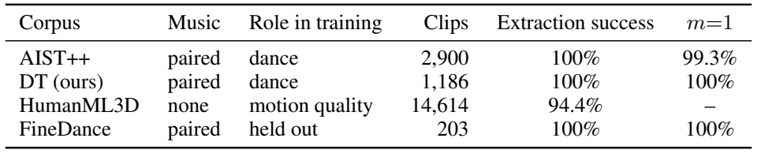
![m=1]() is the share that resolves at a unit multiplier. For DT, clips counts the
is the share that resolves at a unit multiplier. For DT, clips counts the ![926]() original clips plus
original clips plus ![260]() slices, excluding mirrored copies.
slices, excluding mirrored copies.On AIST++ and DT the chain forms for every clip: the failure cases (too few velocity valleys, no music beats, or no admissible chain) occur zero times, and nearly every clip resolves at ![m=1]() . The
. The ![0.7%]() of AIST++ clips that need a fallback concentrate in Street Jazz, where
of AIST++ clips that need a fallback concentrate in Street Jazz, where ![5.9%]() of clips resolve at a non-unit multiplier, against
of clips resolve at a non-unit multiplier, against ![0%]() in seven of the ten genres. Street Jazz also has the highest stillness (
in seven of the ten genres. Street Jazz also has the highest stillness (![10.2%)]() and the shortest chains (
and the shortest chains (![6.0]() beats). Every fallback moves toward slower motion (
beats). Every fallback moves toward slower motion (![m=2]() or
or  rather than
rather than 
![1),2 4]() which corresponds to the non-driving-accompaniment case discussed in Section 1. HumanML3D, by contrast, yields a recoverable period for only
which corresponds to the non-driving-accompaniment case discussed in Section 1. HumanML3D, by contrast, yields a recoverable period for only ![94.4%]() of clips. This contrast supports the premise of our phase representation: dance, unlike general motion, is built on the periodicity of the music. FineDance, which we do not train on, also extracts at
of clips. This contrast supports the premise of our phase representation: dance, unlike general motion, is built on the periodicity of the music. FineDance, which we do not train on, also extracts at ![100%,]() all at
all at ![m=1]() . Across three independent music-paired corpora, choreography consistently sits on a recoverable period.
. Across three independent music-paired corpora, choreography consistently sits on a recoverable period.
Robustness to a wrong tempo estimate. Music enters Algorithm 1 at a single point, the target period taken from BeatNet. We therefore perturb that value directly, scaling it by ![1+δ,]() and re-run chain selection over all
and re-run chain selection over all ![2,900]() AIST++ clips (Table 8).
AIST++ clips (Table 8).
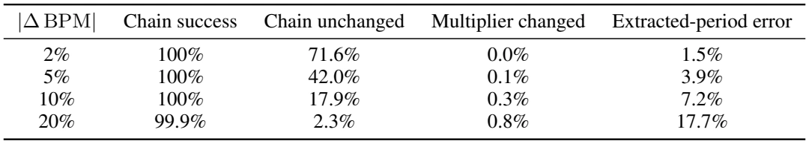
![2,900]() AIST++ clips. Chain unchanged is the share of clips whose selected chain is identical to the unperturbed one; extracted-period error is the mean relative change of the extracted period.
AIST++ clips. Chain unchanged is the share of clips whose selected chain is identical to the unperturbed one; extracted-period error is the mean relative change of the extracted period.A ![2%]() error leaves the chain identical for
error leaves the chain identical for ![71.6%]() of clips and shifts the extracted period by
of clips and shifts the extracted period by ![1.5%]() . Deviations at the
. Deviations at the ![10%]() scale are not typical of contemporary choreography; where they appear, it is in classical forms with sustained rubato, such as ballet. In those genres the dancer does not track individual beats, so beat-level alignment is not the right description in the first place. This is why we measure periodicity rather than beat coincidence, and why we report BAS per genre rather than as a single mean: how tightly a dance sits on the beat is a property of the genre, not a quality score.
scale are not typical of contemporary choreography; where they appear, it is in classical forms with sustained rubato, such as ballet. In those genres the dancer does not track individual beats, so beat-level alignment is not the right description in the first place. This is why we measure periodicity rather than beat coincidence, and why we report BAS per genre rather than as a single mean: how tightly a dance sits on the beat is a property of the genre, not a quality score.
C Robustness to Phase Errors
Appendix B examines how errors in the tempo estimate affect the extracted phase; here we examine how errors in the phase affect generation. All experiments are inference-time interventions on Dance Prediction (MP) and Dance In-betweening (IB) on AIST++: the checkpoint is the same as in Table 3, and only the phase handed to the decoder changes. Table 9 compares two kinds of perturbed phase against gt_phase, the phase our extraction produces, and two conditions in which no varying phase is given.
Perturbed and removed phases. Fixed period gives every clip the same phase rate, swept from ![0.5]() to
to ![2.0]() cycles/s. A uniform change of period leaves the phase perfectly periodic, so it does not model the error that extraction actually makes, namely a beat placed at the wrong time. Displaced beats therefore shifts each interior beat of gt_phase by a Gaussian offset while holding the first and last beats fixed, so that the tempo is preserved and only the spacing between beats becomes irregular. The median beat interval is
cycles/s. A uniform change of period leaves the phase perfectly periodic, so it does not model the error that extraction actually makes, namely a beat placed at the wrong time. Displaced beats therefore shifts each interior beat of gt_phase by a Gaussian offset while holding the first and last beats fixed, so that the tempo is preserved and only the spacing between beats becomes irregular. The median beat interval is ![610]() ms, so the largest displacement,
ms, so the largest displacement, ![184]() ms, is
ms, is ![30%]() of a beat and
of a beat and ![3.7×]() the
the ![50]() ms tolerance within which BAS counts a beat as aligned. Constant holds the phase at a single point of the circle for every frame, and No phase disables the phase pathway: the phase-gated FFN falls back to its uniform average and the plain motion head replaces the phase-conditioned one.
ms tolerance within which BAS counts a beat as aligned. Constant holds the phase at a single point of the circle for every frame, and No phase disables the phase pathway: the phase-gated FFN falls back to its uniform average and the plain motion head replaces the phase-conditioned one.
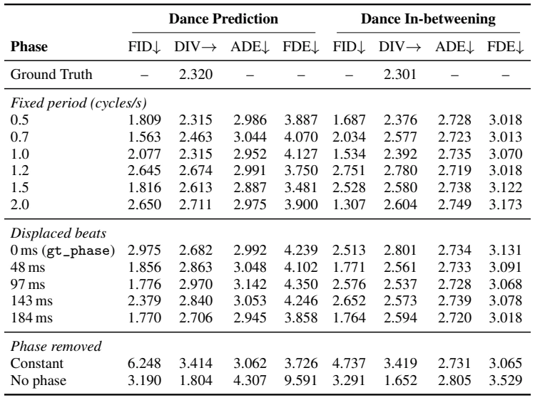
 ms row is the unperturbed gt_phase. Phase removed: the phase is held at a single point (constant) or the phase pathway is disabled (no phase).
ms row is the unperturbed gt_phase. Phase removed: the phase is held at a single point (constant) or the phase pathway is disabled (no phase).Phase errors shift quality only slightly. Under every perturbation, the trajectory metrics stay close to those under gt_phase: MP ADE ![2.887]() –
–![3.142]() and FDE
and FDE ![3.481]() –
–![4.350,]() IB ADE
IB ADE ![2.719]() –
–![2.749]() and FDE
and FDE ![3.013]() –
–![3.173,]() ranges that contain gt_phase on all four metrics. FID varies more (MP
ranges that contain gt_phase on all four metrics. FID varies more (MP ![1.563]() –
–![2.650,]() IB
IB ![1.307]() –
–![2.751)]() but stays below that of either phase-removed condition. We attribute this tolerance to how the phase is consumed. First, the role of phase depends on the input condition (Section 5.2.2). When the conditioning modality already carries rhythmic information, as the motion prefix (or prefix–suffix pair) does here, phase acts as one cue among several, so the effect of a perturbed phase is likely diluted by the context rather than followed literally. Second, the gate of the phase-gated FFN reads
but stays below that of either phase-removed condition. We attribute this tolerance to how the phase is consumed. First, the role of phase depends on the input condition (Section 5.2.2). When the conditioning modality already carries rhythmic information, as the motion prefix (or prefix–suffix pair) does here, phase acts as one cue among several, so the effect of a perturbed phase is likely diluted by the context rather than followed literally. Second, the gate of the phase-gated FFN reads ![(cosSt,sinSt)]() one frame at a time and keeps no state, so successive frames are still routed through different experts along the phase cycle (Appendix D.3). Because the supplied phase advances monotonically, a wrong period changes only how the cycle is traversed, not the order in which the experts are visited, and a displaced beat shifts the cycle locally, affecting only a few frames without carrying into later cycles. Generation therefore varies with the phase it is given, but degrades only moderately under these perturbations.
one frame at a time and keeps no state, so successive frames are still routed through different experts along the phase cycle (Appendix D.3). Because the supplied phase advances monotonically, a wrong period changes only how the cycle is traversed, not the order in which the experts are visited, and a displaced beat shifts the cycle locally, affecting only a few frames without carrying into later cycles. Generation therefore varies with the phase it is given, but degrades only moderately under these perturbations.
Without a varying phase, generation degrades. When no varying phase is given, quality falls outside this range. No phase moves every metric outside it on both tasks: MP ADE rises to ![4.307]() and FDE to
and FDE to ![9.591,]() and diversity falls to
and diversity falls to ![1.804]() (MP) and
(MP) and ![1.652]() (IB). Constant phase raises FID to
(IB). Constant phase raises FID to ![6.248(]() MP) and
MP) and ![4.737(]() IB) and pushes diversity away from the ground truth (
IB) and pushes diversity away from the ground truth (![3.414]() and
and ![3.419)]() . Holding the phase at one point maps every frame to the same point of the circle and hence to a single expert mixture, and disabling the phase pathway removes phase-conditioned routing altogether. The tolerance above therefore does not come from the model ignoring the phase: phase errors are largely tolerated through the motion context and per-frame routing, whereas removing the phase signal degrades generation.
. Holding the phase at one point maps every frame to the same point of the circle and hence to a single expert mixture, and disabling the phase pathway removes phase-conditioned routing altogether. The tolerance above therefore does not come from the model ignoring the phase: phase errors are largely tolerated through the motion context and per-frame routing, whereas removing the phase signal degrades generation.
D PhaseDance Architecture Details
This appendix lists the hyper-parameters and per-task settings that complement Section 4, together with the optional music-conditioned extension.
Encoder branches and motion encoder . The text branch initialises from T5-small [28]; the encoder, the shared input embedding, and the LM head are frozen to preserve T5’s language prior. The motion encoder ![Em]() is a 4-layer pre-LayerNorm Transformer with 8 heads,
is a 4-layer pre-LayerNorm Transformer with 8 heads, ![dff=2048,]() and a learned positional embedding (max length 512), shared across MP2M, IB, and M2T.
and a learned positional embedding (max length 512), shared across MP2M, IB, and M2T.
Per-task settings. MP2M conditions on the first ![20%]() of a clip (
of a clip ( s) and generates the remaining
s) and generates the remaining  s; IB conditions on the first and last
s; IB conditions on the first and last ![25%,]() distinguished by a learned segment embedding, and generates the middle
distinguished by a learned segment embedding, and generates the middle ![50%]() . Motion tokens are sampled with top-
. Motion tokens are sampled with top-![k=50,]() top-
top-![p=0.95,]() and temperature
and temperature ![1.0]() ; M2T captions are decoded with beam search (
; M2T captions are decoded with beam search (![B=4)]() .
.
D.1 Music+Phase-to-Motion (MuP2M) Extension
Because paired music–motion data is scarce relative to the unimodal motion corpora, we treat MuP2M as an optional finetune of the stage-2 checkpoint rather than as a unified task (Section 5.4); its results form the music-conditioned rows of Table 6. Music is encoded by a frozen MERT-v1-95M [21] (![768-]() dim features at
dim features at ![75]() Hz), and a trainable adapter (linear
Hz), and a trainable adapter (linear ![R768→R512,]() LayerNorm, dropout) projects the features to
LayerNorm, dropout) projects the features to ![d=512]() and resamples them from
and resamples them from ![75]() to
to ![50]() Hz to match the motion-token rate. PCCA, the phase-gated MoE FFN, the phase-conditioned output head, and the windowed self-attention are reused from the stage-2 checkpoint, and phase is supplied alongside music as in the other motion-generation tasks. Only the music adapter and the phase-conditioned decoder are updated, with the same token-level cross-entropy, and inference uses the phase modes of Section 5.1.
Hz to match the motion-token rate. PCCA, the phase-gated MoE FFN, the phase-conditioned output head, and the windowed self-attention are reused from the stage-2 checkpoint, and phase is supplied alongside music as in the other motion-generation tasks. Only the music adapter and the phase-conditioned decoder are updated, with the same token-level cross-entropy, and inference uses the phase modes of Section 5.1.
D.2 Compute Resources and Training Budget
Stage-2 multi-task training (the unified four-task model used throughout Section 5) runs on  –
– NVIDIA RTX PRO 4500 Blackwell GPUs for approximately
NVIDIA RTX PRO 4500 Blackwell GPUs for approximately  days, with a per-GPU batch size of
days, with a per-GPU batch size of ![16]() and gradient accumulation over
and gradient accumulation over  steps (effective batch size
steps (effective batch size ![256)]() . The base learning rate is
. The base learning rate is ![1×10−4]() under a linear warm-up (
under a linear warm-up (![5,000]() steps) followed by linear decay over a
steps) followed by linear decay over a ![200,000-]() step cycle. The training data is the union of AIST++, DanceDB, DT, and HumanML3D; audio is not used at this stage. The motion VQ-VAE tokeniser is pre-trained on the same hardware with batch size
step cycle. The training data is the union of AIST++, DanceDB, DT, and HumanML3D; audio is not used at this stage. The motion VQ-VAE tokeniser is pre-trained on the same hardware with batch size ![512]() and base learning rate
and base learning rate ![4×10−4]() . The MuP2M finetune starts from a stage-2 checkpoint and runs on
. The MuP2M finetune starts from a stage-2 checkpoint and runs on  GPUs with a per-GPU batch size of
GPUs with a per-GPU batch size of ![32]() and gradient accumulation over steps (effective batch size
and gradient accumulation over steps (effective batch size ![320),]() with base learning rate
with base learning rate ![1×10−5]() under the same schedule (
under the same schedule (![1,000]() warm-up steps,
warm-up steps, ![8,000-]() step cycle), on the AIST++ paired music–motion subset.
step cycle), on the AIST++ paired music–motion subset.
D.3 Expert Specialisation in the Phase-Gated MoE
The gate ![g(φ)=softmax(MLP([cosS,sinS]))]() of the phase-gated MoE (Section 4.2.2) takes phase and nothing else. Instead of sampling, we therefore characterise it exhaustively: we sweep over the whole beat cycle
of the phase-gated MoE (Section 4.2.2) takes phase and nothing else. Instead of sampling, we therefore characterise it exhaustively: we sweep over the whole beat cycle ![[0,2π)]() and record, for every angle, which expert wins and by how much. Table 10 reads as a map of the beat cycle, listing for each decoder layer the angular arcs that each expert owns. We confirm the sweep against the empirical phase distribution of the validation set (
and record, for every angle, which expert wins and by how much. Table 10 reads as a map of the beat cycle, listing for each decoder layer the angular arcs that each expert owns. We confirm the sweep against the empirical phase distribution of the validation set (![6.4]() M frames); the two agree to within
M frames); the two agree to within ![0.003]() . Experts
. Experts ![E1]() –
–![E4]() correspond to the four phase experts
correspond to the four phase experts ![i=1,...,N]() of the MoE.
of the MoE.
The gate partitions the circle into contiguous arcs and hands them to the experts. At layer 1, for example, ![E1]() takes
takes ![83◦]() –
–![196◦]() and
and ![E2]() takes
takes ![262◦]() –
–![5◦]() . Each expert holds one main arc, sometimes with one or more additional arcs elsewhere on the circle, so each layer divides the beat cycle into a small number of whole segments rather than scattered fragments, as would be expected if the experts split the input on a feature unrelated to rhythm. Entropy sits at
. Each expert holds one main arc, sometimes with one or more additional arcs elsewhere on the circle, so each layer divides the beat cycle into a small number of whole segments rather than scattered fragments, as would be expected if the experts split the input on a feature unrelated to rhythm. Entropy sits at ![26]() –
–![62%]() of the uniform maximum in layers 1–5, so the routing is genuinely conditional, being neither uniform mixing, which would make the MoE decorative, nor a one-hot switch. Each expert is used by several layers, and the layers differ in how finely they cut the circle.
of the uniform maximum in layers 1–5, so the routing is genuinely conditional, being neither uniform mixing, which would make the MoE decorative, nor a one-hot switch. Each expert is used by several layers, and the layers differ in how finely they cut the circle.
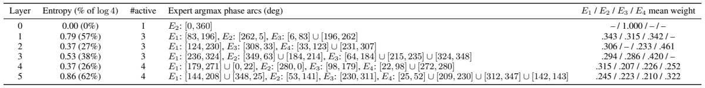
![log4),]() the number of experts that win at least one phase angle, the phase arcs (in degrees) over which each expert is the argmax, and the mean gate weight of each expert. Arcs such as
the number of experts that win at least one phase angle, the phase arcs (in degrees) over which each expert is the argmax, and the mean gate weight of each expert. Arcs such as ![[262,5]]() wrap around
wrap around ![360◦]() ; – marks an expert that is never the argmax (mean weight
; – marks an expert that is never the argmax (mean weight ![<0.001)]() .
.E DT Corpus
This appendix details our newly curated DT corpus introduced in Section 5.1.1. DT is a freestyle hip-hop motion-capture dataset comprising ![926]() clips (
clips (![1,852]() with left–right mirrored augmentation) paired with
with left–right mirrored augmentation) paired with  music tracks and covering
music tracks and covering ![31]() distinct hip-hop street-dance movements. Clips are resampled to the Hz frame rate used across our training corpus and annotated with the same four layers (genre, movement, texture, description) as in Section 3.2, so that DT shares the cross-modal vocabulary of the rest of the training union. We use
distinct hip-hop street-dance movements. Clips are resampled to the Hz frame rate used across our training corpus and annotated with the same four layers (genre, movement, texture, description) as in Section 3.2, so that DT shares the cross-modal vocabulary of the rest of the training union. We use ![1,502/109/100]() clips (including mirrored copies) for train / validation / test. Release status. The DT corpus itself—the raw motion clips and paired music tracks—cannot be redistributed, as it is proprietary data owned by an industry partner. We therefore use DT only for training and report all main results on the public AIST++ test set, so that the evaluation relies on public data alone.
clips (including mirrored copies) for train / validation / test. Release status. The DT corpus itself—the raw motion clips and paired music tracks—cannot be redistributed, as it is proprietary data owned by an industry partner. We therefore use DT only for training and report all main results on the public AIST++ test set, so that the evaluation relies on public data alone.
F BeatNet vs. librosa: Beat-Tracker Comparison on AIST++
We use BeatNet [14] rather than librosa’s beat_track [6] as the music-beat source for BAS and BAS Genre Correlation, because the beat that matters for dance evaluation is the quarter-note beat that dancers count on, not every audible onset. librosa’s onset-autocorrelation tracker can lock onto the eighth-note level and return twice as many beats, whereas BeatNet, a CRNN with particle-filter inference trained on annotated multi-genre corpora, tracks the quarter-note pulse.
On the ![60]() AIST++ songs, the two trackers agree on the tempo for
AIST++ songs, the two trackers agree on the tempo for ![52]() songs (
songs (![86.7%)]() ; librosa reports twice the BeatNet tempo for
; librosa reports twice the BeatNet tempo for  songs and half for
songs and half for  . For example, on mLO0 (Lock), librosa reports
. For example, on mLO0 (Lock), librosa reports ![160.7]() BPM and BeatNet
BPM and BeatNet ![81.1]() BPM, the tempo on which the dance’s
BPM, the tempo on which the dance’s  count is built. A doubled beat grid makes beat coincidence easier and can inflate BAS, and a single song at the wrong tempo octave distorts the per-genre BAS profile.
count is built. A doubled beat grid makes beat coincidence easier and can inflate BAS, and a single song at the wrong tempo octave distorts the per-genre BAS profile.
G Perceptual Validation of the Rhythmic Metrics
BPS and BAS–Genre Correlation (Section 5.1.2) are new metrics, so we test whether they track human perception with two perceptual studies. We recruited ![64]() participants and analysed
participants and analysed ![60]() . Each trial of Study A is a paired comparison with three responses: A, B, or “no difference”.
. Each trial of Study A is a paired comparison with three responses: A, B, or “no difference”.
Procedure and participants. Both studies were run as online questionnaires on Google Forms, with each stimulus embedded as an unlisted video. Participants were asked to wear headphones, could replay each clip freely, and were not told how the stimuli had been constructed. The forms recorded only a self-chosen participant identifier, used to detect duplicate submissions, and years of dance experience. No other personal information was collected. In both studies, motion was shown as a rendered skeleton, and genre labels and condition labels were hidden. No IRB review was sought: the studies involved only watching short dance clips and answering perceptual questions, and posed no foreseeable risk to participants. Participation was voluntary and unpaid.
Instructions. Study A opened with: “This experiment asks how well motion and music interlock. Please wear headphones, as the experiment depends on hearing the music. For each item, play both videos A and B before answering; you may replay them as often as you like. The motion in A and B is identical, so compare only its relation to the music. There are no correct answers; choose as you feel.” Study B instructed: “Each group contains three dance videos of the same style. After watching all three, rate from 1 to 7 whether the movement lands precisely on the beat of the music (7) or flows across the beat (1). We are asking how precisely it lands, not how well it is danced.” Participants were also asked to wear headphones with the sound on.
Study A: periodicity vs. beat coincidence ( participants,
participants, ![29]() retained). This study tests the central claim of the paper: musical dance arises from the alignment of periodicity, not from instantaneous beat coincidence. We hold the motion fixed and vary only the audio, so that BAS and BPS move independently (Table 11). Each item showed two videos, A and B, with identical motion and different audio, and asked “Which one interlocks better with the rhythm of the music?” (A / B / no difference). Three practice items preceded the main items, and item order and A/B placement were randomised. Each participant answered
retained). This study tests the central claim of the paper: musical dance arises from the alignment of periodicity, not from instantaneous beat coincidence. We hold the motion fixed and vary only the audio, so that BAS and BPS move independently (Table 11). Each item showed two videos, A and B, with identical motion and different audio, and asked “Which one interlocks better with the rhythm of the music?” (A / B / no difference). Three practice items preceded the main items, and item order and A/B placement were randomised. Each participant answered  M vs. P,
M vs. P,  M vs. U, P vs. U, and
M vs. U, P vs. U, and  M vs. T items. Condition T, whose tempo differs by
M vs. T items. Condition T, whose tempo differs by ![30]() –
–![40%,]() serves as a gate trial. The exclusion rule was fixed before the data were collected: any participant who did not answer all three M vs. T items correctly was excluded. Of
serves as a gate trial. The exclusion rule was fixed before the data were collected: any participant who did not answer all three M vs. T items correctly was excluded. Of  submissions, four participants failed the gate (each scored
submissions, four participants failed the gate (each scored ![2/3),]() which left
which left ![29,]() of whom
of whom  reported at least one year of dance experience.
reported at least one year of dance experience.
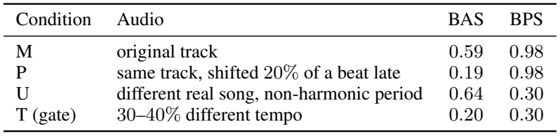
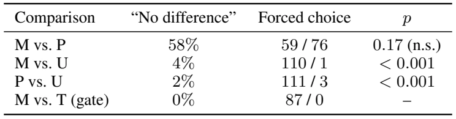
The results support three observations. (i) With the period matched, dance still reads as on-beat after beat alignment collapses: BAS falls from ![0.59]() to
to ![0.19]() between M and P, yet
between M and P, yet ![58%]() of trials report no difference and the forced choices are at chance. (ii) With the period mismatched, dance reads as off-beat although beat alignment is intact: U scores higher on BAS than the original track and is rejected
of trials report no difference and the forced choices are at chance. (ii) With the period mismatched, dance reads as off-beat although beat alignment is intact: U scores higher on BAS than the original track and is rejected ![110]() to . (iii) When the two metrics disagree, perception follows BPS: BAS ranks U above P (
to . (iii) When the two metrics disagree, perception follows BPS: BAS ranks U above P (![0.64]() vs.
vs. ![0.19),]() BPS ranks P above U (
BPS ranks P above U (![0.98]() vs.
vs. ![0.30),]() and viewers choose P
and viewers choose P  to . This is the phenomenon motivated in Section 1: choreography is laid out in beat units on an
to . This is the phenomenon motivated in Section 1: choreography is laid out in beat units on an ![8-]() count grid and thereby inherits the periodicity of the music, so it stays rhythmic even when layback, rubato, or non-driving accompaniment break one-to-one beat alignment; BPS is the statistic that measures this periodicity.
count grid and thereby inherits the periodicity of the music, so it stays rhythmic even when layback, rubato, or non-driving accompaniment break one-to-one beat alignment; BPS is the statistic that measures this periodicity.
Study B: is the per-genre BAS profile perceptual? (![31]() participants). BAS–Genre Correlation scores a model against the ground-truth per-genre BAS vector, so its validity rests on that vector. Participants rated ground-truth AIST++ clips, presented in
participants). BAS–Genre Correlation scores a model against the ground-truth per-genre BAS vector, so its validity rests on that vector. Participants rated ground-truth AIST++ clips, presented in  unlabelled genre groups of
unlabelled genre groups of  clips, with the question “How precisely does this style of dance land on the beat of the music?” on a –
clips, with the question “How precisely does this style of dance land on the beat of the music?” on a – Likert scale (
Likert scale ( “flows across the beat”,
“flows across the beat”,  “hits every beat precisely”); the instructions stressed that the rating did not concern how well the dancer performs. Over the
“hits every beat precisely”); the instructions stressed that the rating did not concern how well the dancer performs. Over the ![10]() genres, the mean rating correlates with the ground-truth per-genre BAS at Pearson
genres, the mean rating correlates with the ground-truth per-genre BAS at Pearson ![r=0.81(p=0.004)]() and Spearman
and Spearman ![ρ=0.79]() (
(![p=0.006)(]() Figure 3): Middle Hip-hop, House, and Breaking are rated as landing most precisely on the beat, and Ballet Jazz, Street Jazz, and Popping least. The reference vector that BAS–Genre Correlation scores against therefore agrees with the profile that viewers perceive.
Figure 3): Middle Hip-hop, House, and Breaking are rated as landing most precisely on the beat, and Ballet Jazz, Street Jazz, and Popping least. The reference vector that BAS–Genre Correlation scores against therefore agrees with the profile that viewers perceive.
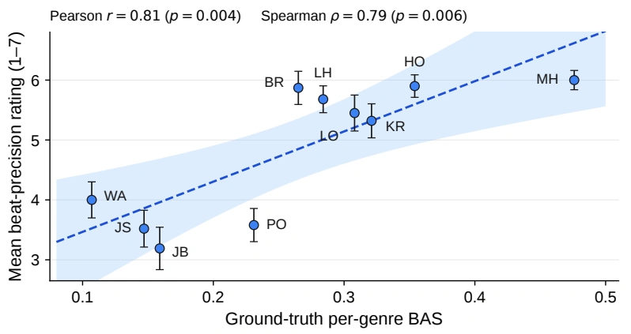
![31]() raters, mean
raters, mean  s.e.m.); the dashed line is a least-squares fit with its 95% confidence band. MH: Middle Hip-hop, HO: House, KR: Krump, LO: Lock, LH: LA-style Hip-hop, BR: Breaking, PO: Popping, JB: Ballet Jazz, JS: Street Jazz, WA: Waacking.
s.e.m.); the dashed line is a least-squares fit with its 95% confidence band. MH: Middle Hip-hop, HO: House, KR: Krump, LO: Lock, LH: LA-style Hip-hop, BR: Breaking, PO: Popping, JB: Ballet Jazz, JS: Street Jazz, WA: Waacking.H LMA Pipeline Details
This appendix complements the body summary in Section 3.2 with the full motion–music correspondence table (Table 13, with closed-form expressions per metric), concrete tag-discretisation examples, the full tag vocabulary (Appendix H.1), and the caption templates (Appendix H.2).
H.1 Descriptor Computation and Tag Vocabulary
Each of the fifteen descriptors is computed in closed form (Table 13) from a 22-joint motion sequence, with no learned components and no hand-labelling. The descriptors span five categories: Energy / Intensity, Texture / Timbre, Space / Dynamics, Rhythm / Groove, and Style / Expression. For example, vigour is the mean joint speed . Each descriptor is normalised over the corpus, discretised into 3–4 ordinal bins that each carry a fixed adjective, and paired with a music feature on the same semantic axis; for example, vigour → {calm, moderate-energy, high-energy} and flow → {staccato, sharp, mixed-texture, fluid}. Because the resulting texture layer is computed deterministically, it transfers across corpora with different labelling conventions. Each bin’s adjective is chosen to read naturally in a sentence (e.g., high-energy, punchy, fluid); where a single word would sound unnatural, a short phrase takes its place. Table 14 lists the full vocabulary. Because the movement tempo tag overlaps with the rhythmic information already carried by the phase signal, we apply tempo-tag augmentation only on tasks where phase is absent or auxiliary, and omit it on tasks where phase is the dominant rhythmic anchor.
H.2 Caption Template Synthesis
The adjectives are woven into captions through a tiered template mechanism with three registers:
• Rich (![60%)]() . Genre, move name, kinematic description, and 1–3 texture adjectives are combined. The phrasing is drawn from a pool of sentence structures whose open slots the available layers fill, e.g., “In this {genre} sequence, the dancer performs a {move} with {texture} quality. {description}.” or “A {texture} {move} in {genre} style. {description}.”
. Genre, move name, kinematic description, and 1–3 texture adjectives are combined. The phrasing is drawn from a pool of sentence structures whose open slots the available layers fill, e.g., “In this {genre} sequence, the dancer performs a {move} with {texture} quality. {description}.” or “A {texture} {move} in {genre} style. {description}.”
• Medium (![25%)]() . Genre and move name only, with texture left out, e.g., “This {genre} sequence features a {move}.”
. Genre and move name only, with texture left out, e.g., “This {genre} sequence features a {move}.”
• Vague (![15%)]() . The genre label alone, echoing the sparse captions that appear at evaluation time, e.g., “This is a {genre} dance.”
. The genre label alone, echoing the sparse captions that appear at evaluation time, e.g., “This is a {genre} dance.”
Within each register the phrasing varies in sentence order and connectives, so the model sees the same semantic content expressed in multiple surface forms rather than a single repeated string.
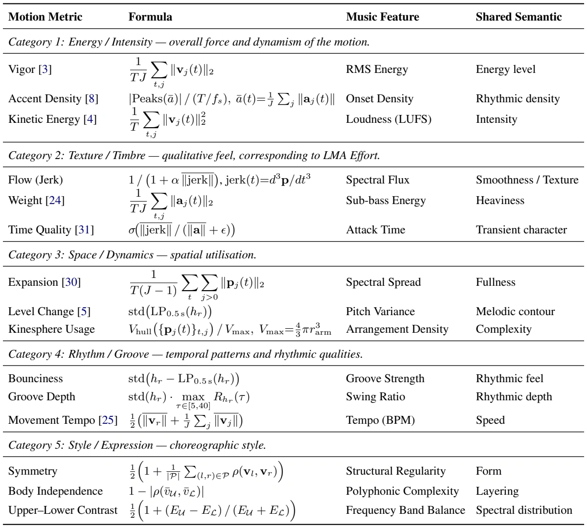
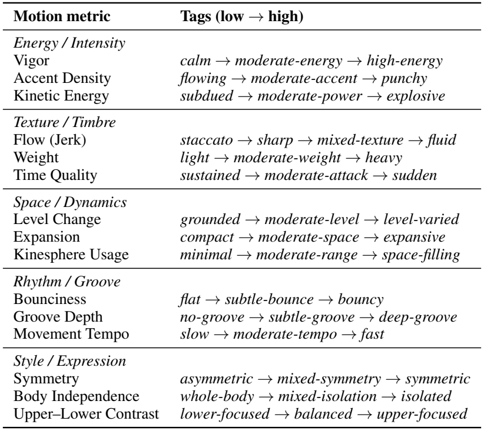
Table 14 · 可翻译文字版
| Motion metric | Tags (low → high) |
|---|---|
| Energy / Intensity | |
| Vigor | calm → moderate-energy → high-energy |
| Accent Density | flowing → moderate-accent → punchy |
| Kinetic Energy | subdued → moderate-power → explosive |
| Texture / Timbre | |
| Flow (Jerk) | staccato → sharp → mixed-texture → fluid |
| Weight | light → moderate-weight → heavy |
| Time Quality | sustained → moderate-attack → sudden |
| Space / Dynamics | |
| Level Change | grounded → moderate-level → level-varied |
| Expansion | compact → moderate-space → expansive |
| Kinesphere Usage | minimal → moderate-range → space-filling |
| Rhythm / Groove | |
| Bounciness | flat → subtle-bounce → bouncy |
| Groove Depth | no-groove → subtle-groove → deep-groove |
| Movement Tempo | slow → moderate-tempo → fast |
| Style / Expression | |
| Symmetry | asymmetric → mixed-symmetry → symmetric |
| Body Independence | whole-body → mixed-isolation → isolated |
| Upper–Lower Contrast | lower-focused → balanced → upper-focused |
I Quantitative Results
I.1 Cross-Dataset Evaluation on FineDance
Beyond AIST++, our other training corpora (DT and DanceDB) are not standard dance-evaluation benchmarks. We therefore additionally train on FineDance and evaluate Dance Prediction and In-betweening on its test set (Table 15). The baselines are compared against the deployable synthesis_phase setting; the gt_phase row is reported for reference only.
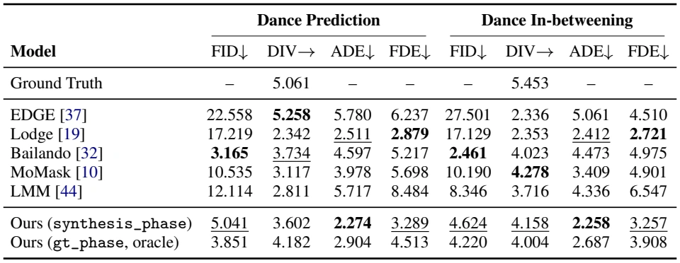
J Qualitative Results
J.1 Dance-to-Dance
Figure 4 illustrates how varying the synthetic phase from a fixed motion prefix produces visibly different rhythmic continuations under MP2M, supporting the role of phase as an explicit user-controllable knob (Section 5.2.2).
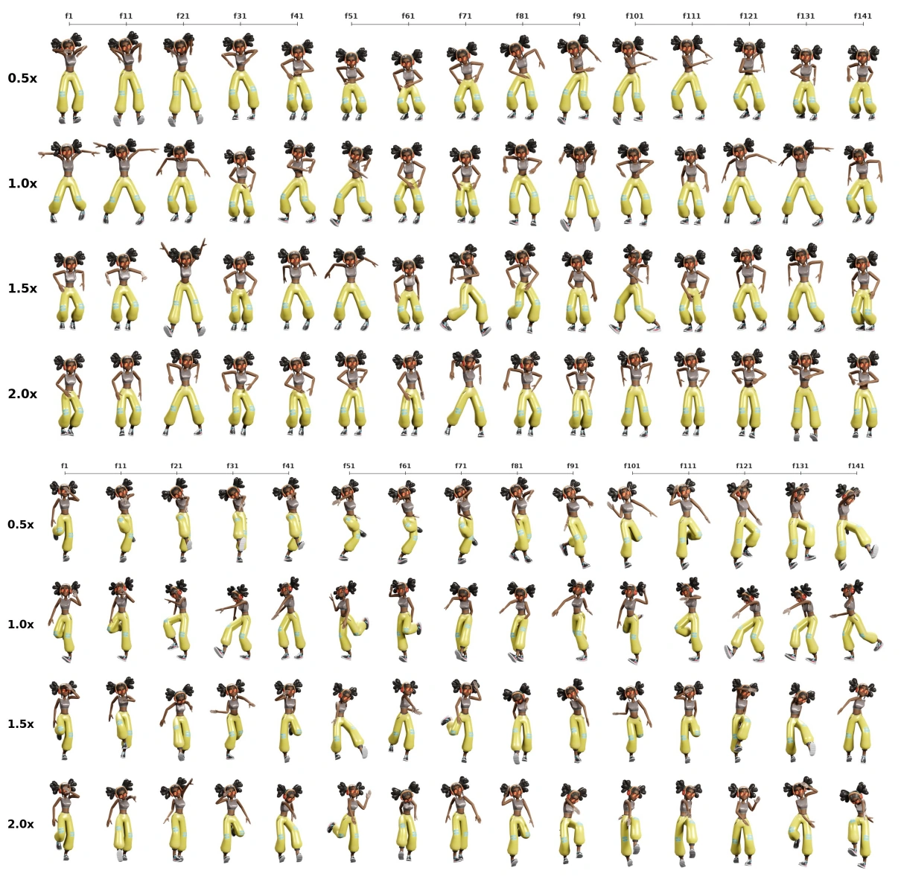
 at
at ![0.5×/1.0×/1.5×/2.0×]() a nominal BPM yields rhythmically distinct continuations under Dance-to-Dance.
a nominal BPM yields rhythmically distinct continuations under Dance-to-Dance.J.2 Text-to-Dance
Figure 5 compares PhaseDance with music- and text-conditioned baselines on Break and Krump. PhaseDance returns to similar key poses at regular intervals, so its movement follows a steady rhythmic cycle, whereas the baselines show a less regular temporal structure.
J.3 Dance-to-Text
Table 16 compares captions generated by PhaseDance and UniMuMo [40], the only released model on this task. UniMuMo was trained on HumanML3D general-motion descriptions and dance genre labels only, whereas our model is trained on the LMA texture and move-name layers derived from the dance corpora (Section 3.2). This gives our model access to the genre- and move-specific vocabulary that dance captioning requires, while UniMuMo falls back to generic motion descriptions and, for the Lock clip, names the wrong genre.
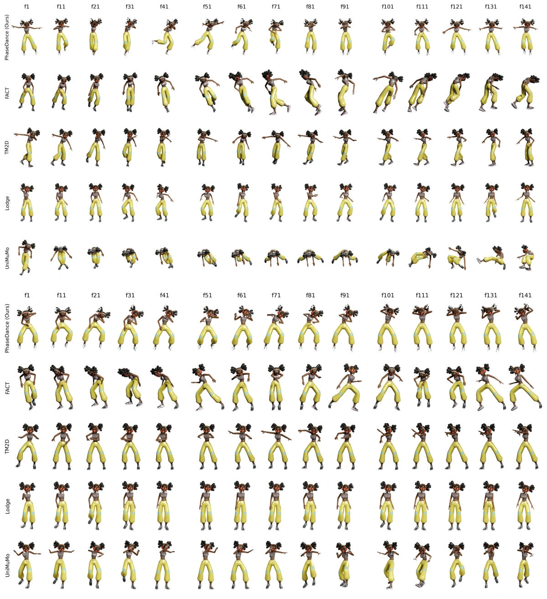
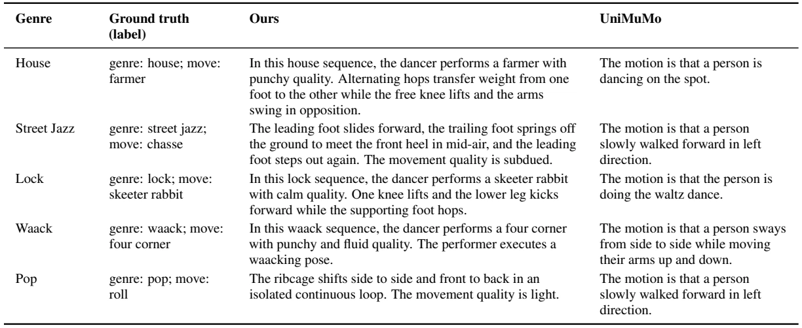
Table 16 · 可翻译文字版
| Genre | Ground truth (label) | Ours | UniMuMo |
|---|---|---|---|
| House | genre: house; move: farmer | In this house sequence, the dancer performs a farmer with punchy quality. Alternating hops transfer weight from one foot to the other while the free knee lifts and the arms swing in opposition. | The motion is that a person is dancing on the spot. |
| Street Jazz | genre: street jazz; move: chasse | The leading foot slides forward, the trailing foot springs off the ground to meet the front heel in mid-air, and the leading foot steps out again. The movement quality is subdued. | The motion is that a person slowly walked forward in left direction. |
| Lock | genre: lock; move: skeeter rabbit | In this lock sequence, the dancer performs a skeeter rabbit with calm quality. One knee lifts and the lower leg kicks forward while the supporting foot hops. | The motion is that the person is doing the waltz dance. |
| Waack | genre: waack; move: four corner | In this waack sequence, the dancer performs a four corner with punchy and fluid quality. The performer executes a waacking pose. | The motion is that a person sways from side to side while moving their arms up and down. |
| Pop | genre: pop; move: roll | The ribcage shifts side to side and front to back in an isolated continuous loop. The movement quality is light. | The motion is that a person slowly walked forward in left direction. |
K Broader Impacts
Positive impacts. PhaseDance lowers the technical barrier to expressive choreography synthesis and enables several constructive applications. (i) Choreographic assistance. Dancers and choreographers can prototype rhythmic continuations, explore stylistic variations under explicit phase control (Section 5.2.2, Figure 4), and edit existing sequences without manual keyframing. (ii) Dance education and accessibility. The Dance-to-Text pathway (Section 5.3) produces fluent captions of dance qualities expressed in LMA-grounded vocabulary (Section 3.2), supporting tools that describe choreography for learners and for users with visual impairments. (iii) Cultural preservation. The framework’s ability to handle music-free clips through deterministic phase extraction (Section 3.1) facilitates the documentation and re-staging of folk and traditional dance forms where paired audio recordings may be unavailable.
Negative impacts. Generated dance could be used to imitate a choreographer’s or dancer’s style without attribution, or, when retargeted onto realistic avatars, to fabricate performances attributed to real people. Models trained on limited genres may also misrepresent traditional or culturally specific dance forms.
NeurIPS Paper Checklist
1. Claims
Question: Do the main claims made in the abstract and introduction accurately reflect the paper’s contributions and scope?
Answer: [Yes]
Justification: The abstract and Section 1 state four contributions (music-aligned periodic phase, phase-gated architecture, LMA-grounded music-aligned text, and multi-task phase-conditioned generation), each supported by Section 5 (Tables 2 to 5).
Guidelines:
• The answer [N/A] means that the abstract and introduction do not include the claims made in the paper.
• The abstract and/or introduction should clearly state the claims made, including the contributions made in the paper and important assumptions and limitations. A [No] or [N/A] answer to this question will not be perceived well by the reviewers.
• The claims made should match theoretical and experimental results, and reflect how much the results can be expected to generalize to other settings.
• It is fine to include aspirational goals as motivation as long as it is clear that these goals are not attained by the paper.
2. Limitations
Question: Does the paper discuss the limitations of the work performed by the authors?
Answer: [Yes]
Justification: Section 6 discusses three limitations: the DT data cannot be redistributed (Appendix E), BAS-based metrics inherit BeatNet error (Appendix F), and phase errors well beyond the typical range can propagate to generation (Appendices B and C). Future work includes unifying music conditioning (Appendix D.1) and using the amplitude channel ![At]() as a control knob.
as a control knob.
Guidelines:
• The answer [N/A] means that the paper has no limitation while the answer [No] means that the paper has limitations, but those are not discussed in the paper.
• The authors are encouraged to create a separate “Limitations” section in their paper.
• The paper should point out any strong assumptions and how robust the results are to violations of these assumptions (e.g., independence assumptions, noiseless settings, model well-specification, asymptotic approximations only holding locally). The authors should reflect on how these assumptions might be violated in practice and what the implications would be.
• The authors should reflect on the scope of the claims made, e.g., if the approach was only tested on a few datasets or with a few runs. In general, empirical results often depend on implicit assumptions, which should be articulated.
• The authors should reflect on the factors that influence the performance of the approach. For example, a facial recognition algorithm may perform poorly when image resolution is low or images are taken in low lighting. Or a speech-to-text system might not be used reliably to provide closed captions for online lectures because it fails to handle technical jargon.
• The authors should discuss the computational efficiency of the proposed algorithms and how they scale with dataset size.
• If applicable, the authors should discuss possible limitations of their approach to address problems of privacy and fairness.
• While the authors might fear that complete honesty about limitations might be used by reviewers as grounds for rejection, a worse outcome might be that reviewers discover limitations that aren’t acknowledged in the paper. The authors should use their best judgment and recognize that individual actions in favor of transparency play an important role in developing norms that preserve the integrity of the community. Reviewers will be specifically instructed to not penalize honesty concerning limitations.
3. Theory assumptions and proofs
Question: For each theoretical result, does the paper provide the full set of assumptions and a complete (and correct) proof?
Answer: [N/A]
Justification: The paper does not include theoretical results requiring formal proofs; contributions are empirical and architectural.
Guidelines:
• The answer [N/A] means that the paper does not include theoretical results.
• All the theorems, formulas, and proofs in the paper should be numbered and cross-referenced.
• All assumptions should be clearly stated or referenced in the statement of any theorems.
• The proofs can either appear in the main paper or the supplemental material, but if they appear in the supplemental material, the authors are encouraged to provide a short proof sketch to provide intuition.
• Inversely, any informal proof provided in the core of the paper should be complemented by formal proofs provided in appendix or supplemental material.
• Theorems and Lemmas that the proof relies upon should be properly referenced.
4. Experimental result reproducibility
Question: Does the paper fully disclose all the information needed to reproduce the main experimental results of the paper to the extent that it affects the main claims and/or conclusions of the paper (regardless of whether the code and data are provided or not)?
Answer: [Yes]
Justification: Section 4 describes the full architecture, and Section 5.1 the training data, inference-time phase modes, and evaluation protocol. Appendix D provides the remaining hyper-parameters, per-task settings, and compute details, and Algorithm 1 (Appendix A) gives the phase extraction pipeline.
Guidelines:
• The answer [N/A] means that the paper does not include experiments.
• If the paper includes experiments, a [No] answer to this question will not be perceived well by the reviewers: Making the paper reproducible is important, regardless of whether the code and data are provided or not.
• If the contribution is a dataset and/or model, the authors should describe the steps taken to make their results reproducible or verifiable.
• Depending on the contribution, reproducibility can be accomplished in various ways. For example, if the contribution is a novel architecture, describing the architecture fully might suffice, or if the contribution is a specific model and empirical evaluation, it may be necessary to either make it possible for others to replicate the model with the same dataset, or provide access to the model. In general. releasing code and data is often one good way to accomplish this, but reproducibility can also be provided via detailed instructions for how to replicate the results, access to a hosted model (e.g., in the case of a large language model), releasing of a model checkpoint, or other means that are appropriate to the research performed.
• While NeurIPS does not require releasing code, the conference does require all submissions to provide some reasonable avenue for reproducibility, which may depend on the nature of the contribution. For example (a) If the contribution is primarily a new algorithm, the paper should make it clear how to reproduce that algorithm.
(b) If the contribution is primarily a new model architecture, the paper should describe the architecture clearly and fully.
(c) If the contribution is a new model (e.g., a large language model), then there should either be a way to access this model for reproducing the results or a way to reproduce the model (e.g., with an open-source dataset or instructions for how to construct the dataset).
(d) We recognize that reproducibility may be tricky in some cases, in which case authors are welcome to describe the particular way they provide for reproducibility. In the case of closed-source models, it may be that access to the model is limited in some way (e.g., to registered users), but it should be possible for other researchers to have some path to reproducing or verifying the results.
5. Open access to data and code
Question: Does the paper provide open access to the data and code, with sufficient instructions to faithfully reproduce the main experimental results, as described in supplemental material?
Answer: [Yes]
Justification: The code will be released on the project page (https://meongeun.github. io/phasedance/), and all main results are evaluated on the public AIST++ test set. The in-house DT corpus used for training cannot be redistributed, as it is owned by an industry partner (Appendix E).
Guidelines:
• The answer [N/A] means that paper does not include experiments requiring code.
• Please see the NeurIPS code and data submission guidelines (https://neurips.cc/ public/guides/CodeSubmissionPolicy) for more details.
• While we encourage the release of code and data, we understand that this might not be possible, so [No] is an acceptable answer. Papers cannot be rejected simply for not including code, unless this is central to the contribution (e.g., for a new open-source benchmark).
• The instructions should contain the exact command and environment needed to run to reproduce the results. See the NeurIPS code and data submission guidelines (https: //neurips.cc/public/guides/CodeSubmissionPolicy) for more details.
• The authors should provide instructions on data access and preparation, including how to access the raw data, preprocessed data, intermediate data, and generated data, etc.
• The authors should provide scripts to reproduce all experimental results for the new proposed method and baselines. If only a subset of experiments are reproducible, they should state which ones are omitted from the script and why.
• At submission time, to preserve anonymity, the authors should release anonymized versions (if applicable).
• Providing as much information as possible in supplemental material (appended to the paper) is recommended, but including URLs to data and code is permitted.
6. Experimental setting/details
Question: Does the paper specify all the training and test details (e.g., data splits, hyperparameters, how they were chosen, type of optimizer) necessary to understand the results?
Answer: [Yes]
Justification: Section 5.1 specifies the training corpora, data splits, inference-time phase modes, and evaluation protocol; Appendix D provides the hyper-parameters, decoding settings, and training schedule (batch size, learning rate, warm-up and decay).
Guidelines:
• The answer [N/A] means that the paper does not include experiments.
• The experimental setting should be presented in the core of the paper to a level of detail that is necessary to appreciate the results and make sense of them.
• The full details can be provided either with the code, in appendix, or as supplemental material.
7. Experiment statistical significance
Question: Does the paper report error bars suitably and correctly defined or other appropriate information about the statistical significance of the experiments?
Answer: [No]
Justification: Following standard practice in dance generation benchmarks (EDGE, Bailando, Lodge), we report single-run results on the AIST++ test set, as multi-run training is computationally prohibitive at our multi-task scale. The perceptual studies (Appendix G) report standard errors, confidence intervals, and ![p-]() values.
values.
Guidelines:
• The answer [N/A] means that the paper does not include experiments.
• The authors should answer [Yes] if the results are accompanied by error bars, confidence intervals, or statistical significance tests, at least for the experiments that support the main claims of the paper.
• The factors of variability that the error bars are capturing should be clearly stated (for example, train/test split, initialization, random drawing of some parameter, or overall run with given experimental conditions).
• The method for calculating the error bars should be explained (closed form formula, call to a library function, bootstrap, etc.)
• The assumptions made should be given (e.g., Normally distributed errors).
• It should be clear whether the error bar is the standard deviation or the standard error of the mean.
• It is OK to report 1-sigma error bars, but one should state it. The authors should preferably report a 2-sigma error bar than state that they have a 96% CI, if the hypothesis of Normality of errors is not verified.
• For asymmetric distributions, the authors should be careful not to show in tables or figures symmetric error bars that would yield results that are out of range (e.g., negative error rates).
• If error bars are reported in tables or plots, the authors should explain in the text how they were calculated and reference the corresponding figures or tables in the text.
8. Experiments compute resources
Question: For each experiment, does the paper provide sufficient information on the computer resources (type of compute workers, memory, time of execution) needed to reproduce the experiments?
Answer: [Yes]
Justification: Appendix D (“Compute Resources and Training Budget”) reports the hardware ( –
– NVIDIA RTX PRO 4500 Blackwell GPUs), training time (approximately days for stage-2 multi-task training), and batch sizes and learning rates for stage-2 training, VQ-VAE pre-training, and the optional MuP2M finetune.
NVIDIA RTX PRO 4500 Blackwell GPUs), training time (approximately days for stage-2 multi-task training), and batch sizes and learning rates for stage-2 training, VQ-VAE pre-training, and the optional MuP2M finetune.
Guidelines:
• The answer [N/A] means that the paper does not include experiments.
• The paper should indicate the type of compute workers CPU or GPU, internal cluster, or cloud provider, including relevant memory and storage.
• The paper should provide the amount of compute required for each of the individual experimental runs as well as estimate the total compute.
• The paper should disclose whether the full research project required more compute than the experiments reported in the paper (e.g., preliminary or failed experiments that didn’t make it into the paper).
9. Code of ethics
Question: Does the research conducted in the paper conform, in every respect, with the NeurIPS Code of Ethics https://neurips.cc/public/EthicsGuidelines?
Answer: [Yes]
Justification: We use public motion datasets (HumanML3D, AIST++, DanceDB) under their respective licenses, and the in-house DT corpus was provided by an industry partner for research use (Appendix E). The perceptual studies (Appendix G) involved voluntary, unpaid participants who only watched short dance clips and answered perceptual questionnaires.
Guidelines:
• The answer [N/A] means that the authors have not reviewed the NeurIPS Code of Ethics.
• If the authors answer [No], they should explain the special circumstances that require a deviation from the Code of Ethics.
• The authors should make sure to preserve anonymity (e.g., if there is a special consideration due to laws or regulations in their jurisdiction).
10. Broader impacts
Question: Does the paper discuss both potential positive societal impacts and negative societal impacts of the work performed?
Answer: [Yes]
Justification: Appendix K discusses positive impacts (choreographic assistance, dance education and accessibility, cultural preservation) and negative impacts (style imitation without attribution, fabricated performances attributed to real people, and misrepresentation of culturally specific dance forms).
Guidelines:
• The answer [N/A] means that there is no societal impact of the work performed.
• If the authors answer [N/A] or [No], they should explain why their work has no societal impact or why the paper does not address societal impact.
• Examples of negative societal impacts include potential malicious or unintended uses (e.g., disinformation, generating fake profiles, surveillance), fairness considerations (e.g., deployment of technologies that could make decisions that unfairly impact specific groups), privacy considerations, and security considerations.
• The conference expects that many papers will be foundational research and not tied to particular applications, let alone deployments. However, if there is a direct path to any negative applications, the authors should point it out. For example, it is legitimate to point out that an improvement in the quality of generative models could be used to generate Deepfakes for disinformation. On the other hand, it is not needed to point out that a generic algorithm for optimizing neural networks could enable people to train models that generate Deepfakes faster.
• The authors should consider possible harms that could arise when the technology is being used as intended and functioning correctly, harms that could arise when the technology is being used as intended but gives incorrect results, and harms following from (intentional or unintentional) misuse of the technology.
• If there are negative societal impacts, the authors could also discuss possible mitigation strategies (e.g., gated release of models, providing defenses in addition to attacks, mechanisms for monitoring misuse, mechanisms to monitor how a system learns from feedback over time, improving the efficiency and accessibility of ML).
11. Safeguards
Question: Does the paper describe safeguards that have been put in place for responsible release of data or models that have a high risk for misuse (e.g., pre-trained language models, image generators, or scraped datasets)?
Answer: [N/A]
Justification: We do not release data or models with a high risk of misuse; the DT corpus is not released (Appendix E).
Guidelines:
• The answer [N/A] means that the paper poses no such risks.
• Released models that have a high risk for misuse or dual-use should be released with necessary safeguards to allow for controlled use of the model, for example by requiring that users adhere to usage guidelines or restrictions to access the model or implementing safety filters.
• Datasets that have been scraped from the Internet could pose safety risks. The authors should describe how they avoided releasing unsafe images.
• We recognize that providing effective safeguards is challenging, and many papers do not require this, but we encourage authors to take this into account and make a best faith effort.
12. Licenses for existing assets
Question: Are the creators or original owners of assets (e.g., code, data, models), used in the paper, properly credited and are the license and terms of use explicitly mentioned and properly respected?
Answer: [Yes]
Justification: All external datasets and pretrained models or tools are cited and used under their licenses: AIST++ (CC BY 4.0), HumanML3D (MIT; motions derived from AMASS under its research license), DanceDB (free for research use), T5-small (Apache 2.0), MERT-v1-95M (CC BY-NC 4.0), BeatNet (CC BY 4.0), and librosa (ISC). The DT corpus is used with permission of its industry owner (Appendix E).
Guidelines:
• The answer [N/A] means that the paper does not use existing assets.
• The authors should cite the original paper that produced the code package or dataset.
• The authors should state which version of the asset is used and, if possible, include a URL.
• The name of the license (e.g., CC-BY 4.0) should be included for each asset.
• For scraped data from a particular source (e.g., website), the copyright and terms of service of that source should be provided.
• If assets are released, the license, copyright information, and terms of use in the package should be provided. For popular datasets, paperswithcode.com/datasets has curated licenses for some datasets. Their licensing guide can help determine the license of a dataset.
• For existing datasets that are re-packaged, both the original license and the license of the derived asset (if it has changed) should be provided.
• If this information is not available online, the authors are encouraged to reach out to the asset’s creators.
13. New assets
Question: Are new assets introduced in the paper well documented and is the documentation provided alongside the assets?
Answer: [Yes]
Justification: The LMA descriptors and tag discretisation are documented in Section 3.2 and Appendix H (Table 13); the DT corpus is not released (Appendix E).
Guidelines:
• The answer [N/A] means that the paper does not release new assets.
• Researchers should communicate the details of the dataset/code/model as part of their submissions via structured templates. This includes details about training, license, limitations, etc.
• The paper should discuss whether and how consent was obtained from people whose asset is used.
• At submission time, remember to anonymize your assets (if applicable). You can either create an anonymized URL or include an anonymized zip file.
14. Crowdsourcing and research with human subjects
Question: For crowdsourcing experiments and research with human subjects, does the paper include the full text of instructions given to participants and screenshots, if applicable, as well as details about compensation (if any)?
Answer: [Yes]
Justification: The two perceptual studies (Appendix G) were run as online questionnaires on Google Forms. Appendix G gives the instructions, questions, response options, and procedure. Participation was voluntary and unpaid.
Guidelines:
• The answer [N/A] means that the paper does not involve crowdsourcing nor research with human subjects.
• Including this information in the supplemental material is fine, but if the main contribution of the paper involves human subjects, then as much detail as possible should be included in the main paper.
• According to the NeurIPS Code of Ethics, workers involved in data collection, curation, or other labor should be paid at least the minimum wage in the country of the data collector.
15. Institutional review board (IRB) approvals or equivalent for research with human subjects
Question: Does the paper describe potential risks incurred by study participants, whether such risks were disclosed to the subjects, and whether Institutional Review Board (IRB) approvals (or an equivalent approval/review based on the requirements of your country or institution) were obtained?
Answer: [No]
Justification: No IRB review was sought for the perceptual studies (Appendix G): participants only watched short skeleton-rendered dance clips and answered perceptual questions, which posed no foreseeable risk. Apart from a self-chosen identifier and years of dance experience, no personal information was collected.
Guidelines:
• The answer [N/A] means that the paper does not involve crowdsourcing nor research with human subjects.
• Depending on the country in which research is conducted, IRB approval (or equivalent) may be required for any human subjects research. If you obtained IRB approval, you should clearly state this in the paper.
• We recognize that the procedures for this may vary significantly between institutions and locations, and we expect authors to adhere to the NeurIPS Code of Ethics and the guidelines for their institution.
• For initial submissions, do not include any information that would break anonymity (if applicable), such as the institution conducting the review.
16. Declaration of LLM usage
Question: Does the paper describe the usage of LLMs if it is an important, original, or non-standard component of the core methods in this research? Note that if the LLM is used only for writing, editing, or formatting purposes and does not impact the core methodology, scientific rigor, or originality of the research, declaration is not required.
Answer: [N/A]
Justification: T5-small serves as a standard pretrained backbone (Section 4.1, Appendix D), not an original or non-standard LLM component.
Guidelines:
• The answer [N/A] means that the core method development in this research does not involve LLMs as any important, original, or non-standard components.
• Please refer to our LLM policy in the NeurIPS handbook for what should or should not be described.